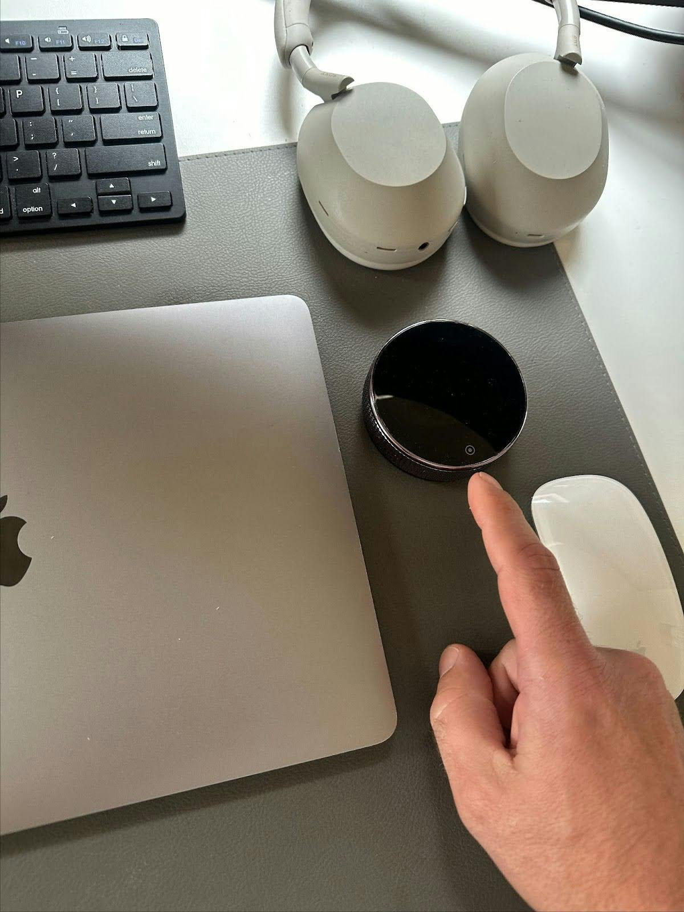
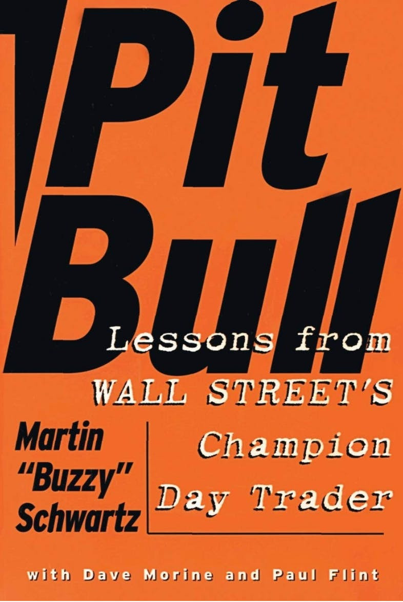
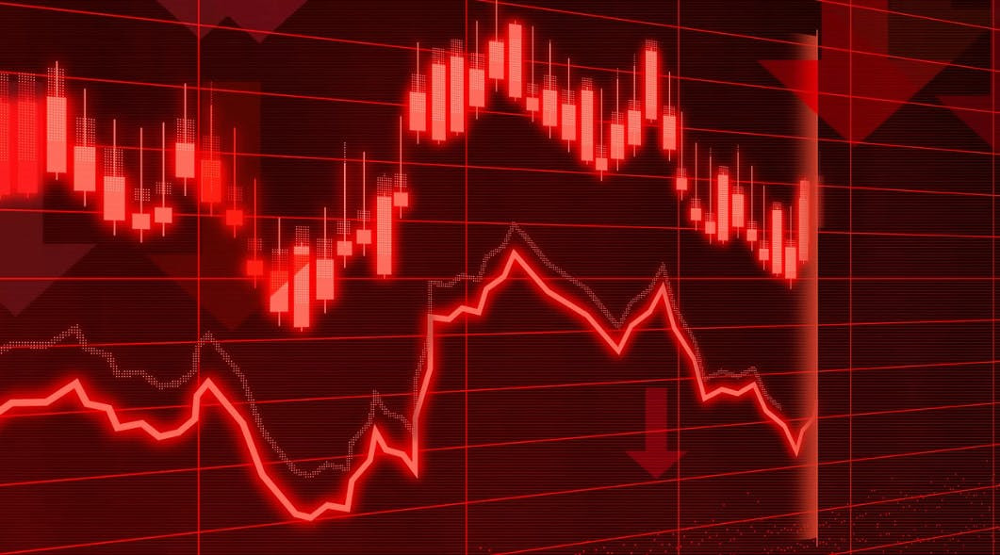
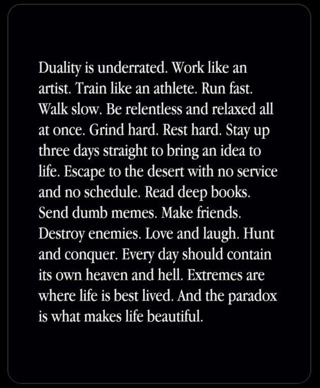
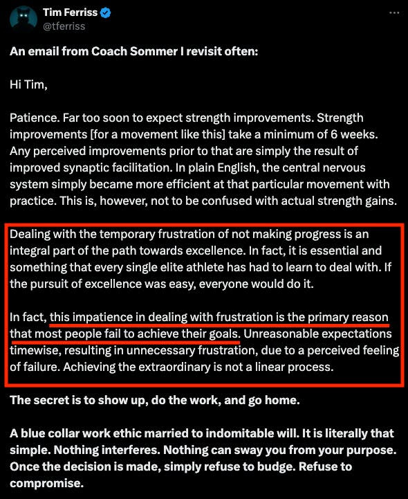
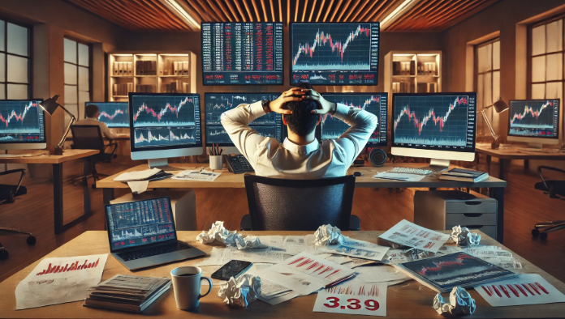
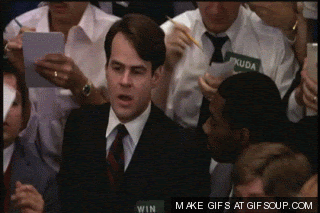

The Trading Journal - TTJ - 2024 @47
March
Thursday, March 28 2024
Video of the Week
Reuters On the Money | onthemoney@thomsonreuters.com | 8:00 PM
Obesity drugs are in the first innings. The pharmaceutical landscape has been transformed by one drug - semaglutide. It made Novo Nordisk the most valuable company in Europe, but this could be just the beginning for weight loss drugs.
⚓ https://www.youtube.com/watch?v=V9040tLpv60
New tech ETFs
Tech ETFs are hot on Wall Street these days. REUTERS/Brendan McDermid
Asset management companies are rolling out new exchange-traded funds (ETFs) to offer investors more ways to play the boom in U.S. mega-cap technology stocks.
⚓ https://www.reuters.com/technology/us-etf-issuers-rush-offer-investors-new-ways-bet-us-tech-megacap-stocks-2024-03-20/?utm_source=Sailthru&utm_medium=Newsletter&utm_campaign=On-The-Money&utm_term=032824&user_email=80a0cf93051c73a74d53958a802fb541e0238e42333237749b047d01661e4d13
Some newcomers include:
But, wait, there is more!
For the latest ETF news, be sure to follow our ETF coverage here.
⚓https://www.reuters.com/markets/etf/?utm_source=Sailthru&utm_medium=Newsletter&utm_campaign=On-The-Money&utm_term=032824&user_email=80a0cf93051c73a74d53958a802fb541e0238e42333237749b047d01661e4d13
April 2024
Wednesday, April 17 2024
Data Downloader For MT5
Expert Advisors | Market | Data Downloader For MT5
c:\Users\Administrator\AppData\Roaming\MetaQuotes\Terminal\73B7A2420D6397DFF9014A20F1201F97\MQL5
May
Friday, May 3 2024
TradingView Wizards 2024: meet our newest experts
Help Center / What's new
We're celebrating this year's TradingView Wizards: these traders & investors share unparalleled insights & trading strategies, making TradingView a source of invaluable knowledge. Meet the 2024 Wizards & follow their accounts to gain new opportunities for growth.
⚓ https://www.tradingview.com/blog/en/tradingview-wizards-2024-44209/
June
Tuesday, June 4 2024
Welcome the winners of the 2nd Leap paper trading competition
Help Center / What's new
See which traders made the most of their trading skills, earned max profits on their accounts, & grabbed their share of the $45,000 prize pool - The Leap winners are here with some insights into their performance. ⚓ https://www.tradingview.com/blog/en/the-leap-2-paper-trading-competition-results-44828/
Wednesday, June 19 2024
Install TradingView Desktop as a Debian package
Help Center / What's new
We deb it! The TradingView Desktop app is now available as a Debian package! Enjoy its full power in a format familiar to you.
Wednesday, June 26 2024
New financial indicators in the Stock Screener
Help Center / What's new
Our Stock Screener functionality has been expanded with new financial metrics: from performance ratios to debt management & growth indicators, explore how these additions can refine your investment strategies. ⚓ https://www.tradingview.com/blog/en/new-financial-indicators-in-stock-screener-45453/
Friday, June 28 2024
Organize your workspace with new layout options
Help Center / What's new
A highly-requested feature has arrived: we've expanded the chart layout options to give you more freedom to customize your analysis. Explore new patterns & find the best fit!
July
Tuesday, July 23 2024
Time in the market or timing the market?
The Daily Fix - Chris Weston | chris.weston@pepperstone.com | 1:54 AM
They say investing is about “time in the market, not timing the market”. Well for traders, one could argue this statement couldn't be further from the truth, where traders need to be selective with their time in the market, holding the patience to execute the higher probability set-ups and price action when it presents itself. Managing an open position is an art in itself - timing is critical, especially for those utilising leverage to take a position.
However, we also know that it's okay to be wrong in trading, but you need to know you're wrong and manage that loss unemotionally and quickly. Trading is about the probabilities seen in a market at that point, and assessing where the market has the greatest potential to move to, knowing that the market will go where it wants to go on any given timeframe, and flow and sentiment are the most influential short-term drivers.
FX markets have also seen a reversal of the flows we saw last week, with Latam FX finding solid buyers following the moves in US tech/semi and notably the CLP and MXN caught a solid bid. The net change in G10 FX has been subdued, although we are seeing better sellers in AUDUSD and NZDUSD, and that has been impacted by a weaker tape in copper and iron ore futures. Moves in US Treasuries have been contained, and this has lent to a small net change in gold and silver.
August
Thursday, August 1 2024
Risky assets hit a sweet spot, at least for now
The Daily Fix - Chris Weston | chris.weston@pepperstone.com | 1:03 AM
A more explicit Fed more than meets the mark
Another highlight was the further confirmation that the US labour market is of equal importance to inflation and that suggests some creeping concerns of future economic fragility that will need to be skilfully managed. Friday's nonfarm payrolls will therefore wear an increased risk premium for markets, and heightened volatility around the jobs print seems assured - if it's important to the Fed, it's important to market pricing.
In theory, it is now not out of the realm of possibility, if we do get higher unemployment in tomorrow's US payrolls, that US rates/swaps markets start to gradually price a premium for a 50bp cut in September, especially with increasingly concerning headlines from the Middle East.
Monday, August 5 2024
Stocks reel on 'R-word' return, Nikkei dives 12%
Reuters Morning Bid U.S. | morningbid@thomsonreuters.com | 2:01 PM
U.S. stocks' eye-watering retreat last week came in the thick of a noisy and somewhat disappointing Big Tech earnings season, with fears about an overspend in artificial intelligence and the lack of an end result yet gnawing at investors.
But the return of U.S. recession worries to a market overwhelmingly priced for a "soft landing" of the economy was the biggest game changer - following a series of weak manufacturing and labor market updates.
Friday, 9 August, 2024
heading-50 into the weekend on a high
The Daily Fix - Chris Weston | chris.weston@pepperstone.com | 1:12 AM
The real test will be the outcome in next week's data releases, with US NFIB small business optimism survey, US CPI inflation, retail sales and University of Michigan sentiment survey all in play. Relying on a further moderation in inflation and a hotter retail sales print is a big ask, but good numbers here and we could be looking at a solid rally playing through the week in equity, and risky markets more broadly. Conversely, poor numbers and anxiety levels could rise, and 'the market' could easily resume ramping up portfolio hedges and head back into recession trades.
Ebbing jobs fear sees calmer market waters
Reuters Morning Bid U.S. | morningbid@thomsonreuters.com | 1:30 PM
Eli Lilly was the standout on Thursday. Its shares jumped almost 10% after the drugmaker raised its annual profit forecast as sales of its popular weight-loss drug Zepbound crossed $1 billion for the first time in a quarter.
Sunday, 11 August, 2024
A Traders' Week Ahead Playbook
After a bruising week we fight on
The Daily Fix - Chris Weston | chris.weston@pepperstone.com | 12:22 PM
Economic data, central bank meetings/speeches and company earnings guidance often result in short-term volatility, but the most important aspect is how the outcomes feed the evolving macro narrative.
The event risks that could move markets this week
With the overriding macro theme being the pricing the probability of a US recession over the coming 4 quarters, amid a synchronized global growth slowdown, one would argue that broad markets will be most sensitive to any data points that offer clarity around consumption trends, consumer spending patterns and inputs that feed into the GDP calculation, with sensitivity also expressed on labour market data.
A 25bp cut from the RBNZ is a coin toss
By way of central banks, we see the RBNZ meeting on Wednesday, with NZ swaps pricing a 72% implied probability of a 25bp cut, while economists are split with 12/25 calling for rates to be left at 5.5% - this implies some degree of volatility in the NZD mid-week. We also see the rates decision from the Norges Bank (due Thursday at 18:00 AEST), although no one expects a change in rates here, it does pose some risk to those holding NOK (Norwegian krone) positions.
So, it's another big week ahead for traders - where, after a solid turnaround on Tuesday in risk assets (such as equity), we ask whether the upside momentum can build. The answers will likely come from the data flow, so stay nimble and react without hesitation.
Tuesday, 13 August, 2024
The flows turn towards crude and gold
The Daily Fix - Chris Weston | chris.weston@pepperstone.com | 1:23 AM
If geopolitical angst is on the rise in crude and gold, then we saw no real interest to buy the CHF or JPY as a hedge in FX markets, and we see a mixed picture for the USD on the day. That may well change if EU and US Nat Gas were to start trending sharply higher, and crude pushed through the various key moving averages (50-, 100-, 200-MA's) - I guess in that dynamic we'd see far better buying of CHF as a hedge in the FX space.
Wednesday, August 14 2024
The Chase is on
The Daily Fix - Chris Weston | chris.weston@pepperstone.com | 12:49 AM
Risk (growth equity, NZD, AUD, GBP) will find buyers if additional implied rate cuts are driven by a reduced inflation dynamic (i.e. right tail risk). However, the opposite is true if any additional rate cuts are driven by weaker growth or poor labour market readings - this week's US retail sales report could therefore be influential on that thesis.
My preference would be to leave limit orders to buy into 0.6040/35 - so if the RBNZ does cut, then we get a quick move lower as the 30% that isn't priced is realised. That said, the ongoing move in the NZD will be down to their guidance and whether the tone meets the pricing for five 25bp rate cuts by Feb 2025. I see downside risk in AUDNZD, but again I would be reacting to what was said, overplaying my hand over the meeting.
Tuesday, August 20, 2024
Equity bulls almost on cloud 9
The Daily Fix - Chris Weston | chris.weston@pepperstone.com | 1:18 AM
EURUSD is clearly driving the DXY move (the EUR holds a 57% weight in the DXY calculation), and with EURUSD pushing strongly higher, in line with S&P500 futures, we see EURUSD testing levels I had not expected to come into play so early in the week. I was looking at short positions in the pair into these levels, but after such impressive range expansion, I am standing aside on that trade.
USDJPY initially drove the USD selling in Asia yesterday, trading into 145.18 although we've seen shorts cover and we see rates at 146.60 - I suspect this pair will be at the heart of USD flows through Asia today, with USDCNH also one to that could influence the broad USD performance.
New Calendar is live now — check it out
TradingView | hello@tradingview.com | 6:22 PM
New Calendar: never miss a financial beat
Hey, it's TradingView here,
It's time to show you our new Calendar — with better capabilities, better user experience, and better functionality. We've combined all the events your heart desires from three financial calendars in one powerful tool.
Access the latest and upcoming economic events, world companies' earnings, and dividends, on a separate page or directly while charting. Check for any time period you want — today, yesterday, tomorrow, next week, you name it, and never miss a financial beat.
Economic Calendar
Track major and minor economic events from around the world. Explore interest rate decisions, central bank meetings, unemployment figures, and more to be prepared for market changes.
Over 300,000+ economic indicators from 196 countries
Filters for categories, countries, regions, and by importance of events
Estimates, actual values, and historical data for comprehensive analysis of each event
Earnings Calendar
Dive into corporate financial reports with EPS and revenue calendars to react quickly to new stock price trends.
180,000 securities from 90 countries in the Americas, Europe, and Asia-Pacific
Two tabs with earnings and revenue. Convenient to compare latest and upcoming reports and forecasts
Filter for market capitalization allowing to check for the earnings of the biggest market players even more easily
Dividend Calendar
Monitor company dividends so you don't miss out on trading opportunities and potential profit.
Almost 200,000 assets from across the world to explore
Sorting by ex-dividend date helps to get when you need to own stocks to receive dividends
Filters for countries, dividend yield, amount, and pay date to tailor your analysis
Wednesday, August 21 2024
The USD just can't find a friend
The Daily Fix - Chris Weston | chris.weston@pepperstone.com | 12:38 AM
Gold has found support from the weaker USD and holds the former trend support for a new closing high. The broad market is long and strong, perhaps a touch too long, but until price can close below the 5-day EMA, I would either be long or neutral, but shorts have been frustrating and costly. There is always the risk we see USD shorts lighten up into Jay Powell's testimony on Friday but picking the low in the USD and top in gold has been costly, where the weight of capital flow has been one-way, and it still suggests that trend not for fighting just yet.
Invest Like a Billionaire with 13F Filings [Webinar]
Investing.com | newsletter@investingmail.com 08:00AM EDT
Unlock Billionaire Strategies: Invest Like the Best Using 13F Filings
Expert: Jesse Cohen/Investing.com
Hosted by: Investing Pro Webinars
Discover how to mirror the investment moves of top billionaires with 13F filings. Join Jesse Cohen for exclusive insights that will transform your financial decisions and supercharge your portfolio. Sign up for this week's Investing Academy's webinar, no payment required
Copy the Smartest Investment Moves from Billionaires & Hedge Funds
This Investing Academy webinar is aimed at helping participants learn and better master a plethora of technical skills and knowledge, providing them with the right tools needed to keep up with the fast-paced financial market. This webinar will provide you with all the information you need to be a successful investor and trader in 2024's market environment.
Master The Market, And Walk Away From This Webinar Understanding Four Main Basic Lessons:
Understand how 13F filings reveal the latest investments of top hedge funds and billionaires.
Learn how to interpret and apply 13F data to your own investment strategies.
Gain insights into the decision-making processes of successful investors.
Equip yourself with practical tools to track and emulate the portfolio choices of financial giants.
⚓ Unlock Billionaire Investing Secrets Boost Your Stock Earnings with 13F Filings
Sunday, August 25 2024
On my command unleash rate cuts
The Daily Fix - Chris Weston | chris.weston@pepperstone.com | 12:37 PM
The August US Nonfarm payrolls to settle the Fed rate cut debate
It's hard to deny how important the August nonfarm payrolls (NFP) print (on 6 Sept) will likely be and could be the defining data point that settles the September FOMC rates debate, and whether the Fed cut by 25bp or 50bp.
Chair Powell essentially made it clear with his view that a “cooling labor market is unmistakable” and that they no longer “seek or welcome further cooling in labor market conditions”. A weak NFP, say below 130k jobs and an unchanged unemployment rate at 4.3%, will likely see many of the economists who were calling for a 25bp cut for September change to 50bp, and US rates markets will price 50bp as its central case.
One counterargument to that call would be the influence of US election on 5 November. The Fed like to claim they are independent, but there is a school of thought that voters within the Fed ranks may be more comfortable pulling out a larger 50bp cut at the FOMC meeting after the election on 7 November. One issue with that call is that there is no guarantee we'll know the outcome of the election by then, so if there is a greater need to bring rates out of a restrictive setting, and the election result is not known, then the Fed will have to wait until the 18 December meeting - an outcome that the markets will see as a policy mistake and take the Fed to task.
September
Tuesday, September 3 2024

Understanding Market Volatility webinar
Pepperstone | support@pepperstone.com 6:00 - 7:00 pm (UK)
Be prepared for moving markets with expert guidance from Mark Holstead in tonight's live webinar. Understanding Market Volatility: Trading Strategy Selection. Tune in and equip yourself with essential strategies for the most challenging trading environments.
Key highlights:
Setups and strategies for fast markets
Risk management and sizing
Performance review process
Confidence under pressure
⚓ Understanding Market Volatility with Mark Holstead
Wednesday, September 4 2024
An ugly start to the new month
The Daily Fix - Chris Weston | chris.weston@pepperstone.com | 1:08 AM
The cross-market reaction on the day
Sunday, September 8 2024
Markets Demand Clarity
A Traders' Week Ahead Playbook | chris.weston@pepperstone.com | 11:13 PM
The JPY remains in high demand
In FX markets, pro-cyclical/growth currencies (AUD, ZAR, and NZD) were sold, while the JPY has shown its hand once again as the place to be at present. The sheer pace of the JPY rally since mid-July would be a growing concern for Japanese authorities, but it seems that there is further to go in the unwind of the JPY-funded carry trade and with Japan Q2 GDP (due today at 09:50 AEST) likely to be revised higher, this better growth may only increase the JPY inflows. We are seeing Japanese equity being carved up, and one questions if greater cracks emerge in the Japanese funding markets.
The ECB Meeting (Thursday 22:15 AEST) - The ECB will almost certainly cut rates by 25bp, an outcome that is fully discounted. We also see expectations (priced into EU interest rate swaps) for a further 25bp cut by December, with the possibility of 2 25bp cuts. Therefore, the ECB's statement outlook and guidance on policy and new economic projections is where we are likely to promote a reaction in the EUR and EU equity indices.
Tuesday, September 10 2024

The Essential Playbook for New Traders
Kickstart your trading journey with a strong foundation
Date & Time Sep 10, 2024 06:00 PM London
Simple yet effective trading strategies
Key indicators and practical applications
Risk management techniques
Developing a disciplined trading routine
Building confidence in your trades
Starting out as a newer trader can feel overwhelming, with countless markets, strategies, indicators, and concepts to navigate, it's tough to know what to focus on.
This webinar is designed to simplify your trading journey, guiding you step-by-step through all the essentials you need to navigate the markets.
Learn everything from foundational strategies to understanding indicators, developing consistent routines, and managing risk.
⚓ The Essential Playbook for New Traders
A better tone to risk but little has changed
The Daily Fix | chris.weston@pepperstone.com | 1:28 AM
Taking some of the gloss off broad sentiment was China equity once again failing to participate, with the CSI300 making yet another lower low. China gets close attention again in the session ahead, with the release of the August trade data, where we see loose expectations that exports will increase by 6.6% y/y and imports increasing modestly by 2.5% y/y. China's monthly trade data is a hard one to reconcile (and price risk off), not just because forecasting this data is a finger-in-the-air exercise, but there is also no set time for the release. However, given how sensitive markets are to China's growth trajectory at present, when we do know the outcome, it has the potential to impact commodity markets, as well as the China proxies (AUD, NZD, and copper for example).
GBPUSD gets good attention from clients, and we see on the daily timeframe that spot has printed a lower low and has closed below the 3 Sept pivot. EURUSD sits on the 3 Sept low of 1.1026, where a closing break here and USD shorts would likely reduce more aggressively, with the prospect of 1.0950 coming into play. NZDUSD is starting to bear trend, with rallies into the 5-day EMA used to add to shorts - one to watch.
Sunday, September 15 2024
A Traders' Week Ahead Playbook
A Peaceful Easing Feeling
The Daily Fix | chris.weston@pepperstone.com | 1:38 PM
S&P500 futures weekly chart and % change
Tuesday, September 17 2024

Mastering the Art of Trade Review
Transform your trading with a robust review process
Date & TimeSep 17, 2024 08:00 PM in Nairobi
Key elements of an effective trade review
Identifying strengths and weaknesses in your trading
Techniques for documenting and analysing trades
Strategies to refine and enhance future performance
Building a disciplined approach to continuous improvement
We will dive deep into the essential components of a successful review process, helping you uncover valuable insights from every trade.
⚓ Mastering the Art of Trade Review
Wednesday, September 18 2024
Risk management is the order of the day
The Daily Fix
Chris Weston | chris.weston@pepperstone.com | 1:33 AM
With the market short of USDs, the rise in US bond yields triggered modest USD buying vs the GBP, EUR, and CHF, although USD repositioning has been most pronounced in USDJPY, with the spot rate trading above 142.
Asia has its chance to react to the rally in USDJPY, so we'll see if further squaring can lift the pair towards 143 - it certainly seems prudent to reduce size positions and run very modest USD risk into the FOMC meeting - as the potential outcomes for USD risk are truly dispersed and if you ask 10 people how they see the FOMC meeting going down, you'll likely get 10 different answers. We also see USDJPY closing above the 5-day EMA, which has defined the recent run lower from 2 September, so the downside momentum has clearly shifted.
Thursday, September 19 2024
Stocks lap up Fed's fast 'recalibration', BoE up next
Reuters Morning Bid U.S. | morningbid@thomsonreuters.com | 1:21 PM
As for financial markets, the basic rule of thumb is that when the Fed has previously started cutting rates into an ongoing economic expansion then stocks gain more than 16% on average over the following year - led by both large cap and small cap growth stocks.
Futures on the small cap Russell 2000 index were up almost 3% ahead of Thursday's open.
Fed cuts rates by 50 basis points, joins easing cycle
Sunday, September 22 2024
The Edge
Your weekly market adventure begins here
Corellian Academy Webinar | support@pepperstone.com | 7:00 - 8:00 pm (UK) | 9:00 PM
Commodity prices post global PMI survey
Key levels to watch for Oil and AUDUSD
RBA to maintain a hawkish bias?
Key levels to watch for USDCHF and EURCHF
SNB to cut interest rate again?
Tuesday, September 24 2024
Systematic vs. Discretionary Trading Strategies
Discover the best approach for your trading style.
Date & TimeSep 24, 2024 08:00 PM in Nairobi
Explore the fundamentals of systematic trading
Understand the nuances of discretionary trading
Compare the pros and cons of each approach
Learn how to integrate these strategies into your trading plan
Find out which method aligns best with your goals
Should you follow a strict rule-based process or make all your trading decisions based on the information at the time?
In this webinar, we will break down the key differences between these two approaches, helping you understand how each method works and which one suits your trading style.
⚓Systematic vs. Discretionary Trading Strategies
Thursday, September 26 2024
Micron adds fresh tech fizz, China surges anew
Reuters Morning Bid U.S. | morningbid@thomsonreuters.com | 1:50 PM
AI frenzy boosts Micron's revenue growth
Friday, September 27 2024
US PCE eyed as China rebound accelerates
Reuters Morning Bid U.S. | morningbid@thomsonreuters.com | 1:41 PM
Treasury Secretary Janet Yellen said the economy was on course for a 'soft landing' and that would allow Fed rates to come down to 'neutral' levels - seen by Fed officials and financial markets as around 3% compared to the current 4.75-5.0% range.
Euro retreats as inflation sags
The dollar index was firmer, with the euro retreating as euro zone inflation numbers heaped pressure on the European Central Bank to keep cutting its interest rates next month and money markets there now fully price another 50 bps off ECB rates by yearend.
Saturday, September 28 2024
📈#1 The Mindful Minute Method
Traders Mastermind | markh@tradersmastermind.com | 2:20 PM
What are Quick Wins?
Quick Wins are small, simple adjustments you can make to your trading right now, without:
I'm not saying you'll never need to explore those areas, but sometimes the key to better trading is already within your current approach.
With just a few small tweaks, you could see noticeable improvements.
These Quick Wins are perfect for traders who:
So, everyone says trade without emotion.
Even the Trading Psychology OG Mark Douglas said; “If you can learn to create a state of mind that is not affected by the market's behavior, the struggle will cease to exist.”
But it's easier said than done right…
When you're in drawdown for the week and that last trade you took just stopped you out to the tick before ripping in your direction… it's pretty damn tough to stay calm!
The goal should never be to eliminate emotion, but rather to make sure your trades aren't influenced by emotion.
So here's a quick and simple way to reduce the emotional impact on your trades.
Quick Win #1 The Mindful Minute Method
Time needed:
1 minute (plus the time it takes to order from Amazon…)
Action:
When you feel that urge to trade, start a 60-second timer.
Huh? Yep, just start a 60-second timer and ask yourself:
“Is this really the trade I want to take?”
That 60 seconds is just enough to make you stop and consider what's really fuelling this trade decision.
Are you angry because you missed the rally?
Frustrated because your equity curve has recently stagnated?
Or is this a grade-A crisp and clean trade that fits your playbook perfectly?
Trust me. Pausing to think for just 60 seconds is going to save you from a lot of poor trades…
And the very occasional trade you miss, because you waited an extra 60 seconds…well, it's worth it.
How to do it:
I recommend buying an actual timer rather than risking distractions from using your phone's stopwatch.
Here's the one I use:

You can pre-set the 60 seconds on the screen and then when you are about to take a trade just hit the thing.
It's a super easy habit to get into, and if you can do it before each trade you'll find it significantly reduces those impulsive trades.
PS: If you need that Discipline Tracker Link again ⚓https://www.tradersmastermind.com/thank-you-discipline-tracker/
Sunday, September 29 2024
📈#2 The Extended Hold Experiment
Traders Mastermind | markh@tradersmastermind.com | 10:18 AM
Holding winning trades longer.
You know how it goes - on the days you decide to hold your winning trades, they all seem reverse and stop you out…
Then, the moment you decide to take profits quickly, the market turns into a trend day…
Sometimes it feels like doing the opposite of what you're thinking might actually work better!
But the problem is that we don't really KNOW for sure if holding winning trades will improve our trading…
I mean sure, we hear it all the time in trading quotes:
But in the heat of the moment when there's a decent unrealized P&L at stake, it's a tough call, right?
This will help.
Quick Win #2 The Extended Hold Experiment
Time needed:
45 minutes
Action:
Here's a simple tactic to help you understand the impact of holding your winning trades longer:
-
Review Your Recent Trades: Go back over a recent batch of trades. For each winning trade, note down what would have happened if you had held the trade for another 5, 15, and 60 minutes.
No need for precision here - just eyeball the chart and jot down where the price was 5, 15, and 60 minutes after your exit. (Adjust these times if you're a hyper-scalper or a swing trader.)
Record Your Findings: Enter the data into a spreadsheet to see what the outcome would have been holding for the extra period.
Analyze the Results: Instead of guessing where you “could” have exited using hindsight, this exercise gives you concrete data. You're asking yourself, “If I held a bit longer, how would that have impacted my bottom line?”
By reviewing this data, you will know exactly what the result of holding your trades would have been on your P&L.
And if you discover that holding all your trades for an extra 5 minutes pays off, then guess what?
Next time when you are about to exit your next trade, simply wait for another 5 minutes…
This simple adjustment can make a big difference:
Try it, and you'll find it's much easier to run the winners this way.
PS: I appreciate that a blanket 5-minute hold for all trades might not be perfect in all market regimes… but these are quick wins. It's a good starting point to work from.
If you want to dive deeper and have more time to spare I recommend this webinar I hosted for Pepperstone (AUS and UK broker) ⚓https://www.tradersmastermind.com/the-psychology-of-holding-winning-trades/
YouTube ⚓The Psychology of Holding Trades with Mark Holstead
Monday, September 30 2024
📈#3 The Three-Rule Challenge
Traders Mastermind | markh@tradersmastermind.com | 10:19 AM
Alright so hopefully the discipline tracker has been useful for you.
But here's the reality - around this time, a lot of traders stop using it. Motivation wears off, you forget about it, and it ends up buried in your downloads folder.
And I totally get it.
It can feel tedious, logging and tracking…
So if you feel like you've dropped the ball a bit on your discipline, this email is perfect timing for you!
Quick Win #3 The Three-Rule Challenge
Time needed:
15 minutes
Action:
Take a look at all the rules you've set for yourself and remove 80% of them.
Wait, what?
“I can't do that”
Actually, you can - and here's why.
You probably got into trading because you wanted freedom: no boss, no customers, just you and the markets.
You wanted to make your own decisions and be rewarded for them.
But now you've created a long list of rules you have to follow.
That's not exactly the free-spirited, swashbuckling market pirate you envisioned, right?
The truth is, too many rules can make us feel constrained, especially if you're a driven, self-motivated type. We end up rebelling against them.
So let's lighten the load:
Instead of a massive list of rules that tries to cover every possible trading scenario (and inevitably gets broken), prune it down to 3 or 4 essential rules:
Your biggest risk management rules (e.g., daily lockout, maximum loss per day).
A rule that aligns with your current trading goal (e.g., holding trades longer, avoiding counter-trend trades).
An operational rule that always serves you (e.g., not trading the first 5 minutes of the market open, sticking to specific markets).
Then, add these focused rules to your Discipline Tracker sheet.
Sure, your rules list won't look as long or comprehensive, but you'll have a much better chance of sticking to 3 rules than you do 23…
This way, you can go into each trading day totally focused on these key rules.
Once you get some momentum, you'll build confidence, and that confidence will make you feel more positive about your trading - it's a snowball effect.
Try it out: Simplify your rules and stick with them for a while. See how it goes.
My bet is you'll reignite that momentum and won't feel so shackled by too many rules.
October 2024
Tuesday, October 1 2024
📈#4 The Trade Spotlight Framework
Traders Mastermind | markh@tradersmastermind.com | 10:17 AM
Ok so here's a quick win that's helped a ton of traders over the years…
We're always told to journal our trades right?
And it's sound advice.
“If you can't measure it, you can't improve it.” - Peter Drucker
If you're already journaling, this is a neat hack to get the most from your data.
But if you're not journaling, this is also a quick and simple way to get a big win from your trading history without logging every single detail… (Which is probably why you are not journaling right?!)
Quick Win #4 The Trade Spotlight Framework
Time needed:
30 minutes
Action:
Review Your Trades: Go back over your trades from the last quarter and pick out the worst 5 and the best 5. That's all - you don't need to worry about the ones in between. Focus solely on the extremes.
-
Analyze the Worst Trades: Take a closer look at your worst trades. Search for any common themes:
Were you fighting against a trend day?
Was it a particular market or asset?
Were you trading on too low of a time frame?
Did you use too much size?
Were you getting caught in a choppy market?
Usually, there's a pattern or a set of conditions that led to these losing trades.
Identify it and note it down.
-
Examine the Best Trades: Do the same for your best trades. Look for patterns or conditions that these trades have in common:
Were the trading conditions characterized by high volatility?
Did these trades break out of a higher time frame pattern?
Did they occur at a specific time of day?
Again, find the common thread and jot it down.
-
Create a New Rule: Now that you've identified the patterns, create a rule to avoid the conditions that led to your worst trades and to capitalize on the conditions that led to your best trades.
For example:
If your biggest losers were all on days with FOMC announcements, your new rule might be, “No trading on FOMC days.”
If all your winners happened in the first 15 minutes of market open, then focus on trading during that time.
You get the idea…
It might sound simple, but this exercise helps you see in black and white what works for you and what doesn't.
Trading is about doing more of what works and less of what doesn't, and this is a straightforward way to identify those patterns.
(For extra impact: Calculate what your P&L would be if you had cut those losers in half and doubled the impact of the winners…)
I bet your equity curve would look totally different.
P.S.: If you're interested in diving deeper into best practices for maintaining a trading journal, this webinar recording will be incredibly helpful. ⚓https://www.tradersmastermind.com/trading-journal-how-a-journal-can-make-the-difference/
YouTube ⚓Journaling for Day Traders
Stocks kick off Q4 at record, euro inflation undershoots
Reuters Morning Bid U.S. | morningbid@thomsonreuters.com | 1:29PM
Fed chair Jerome Powell cooled speculation of a second 50-basis-point cut at the central bank's next meeting, indicating the central bank was in no rush and suggesting that two more quarter-point rate cuts by year's end was a base case.
"This is not a committee that feels like it is in a hurry to cut rates quickly," Powell told an event in Nashville, adding the economy was in "solid shape."
The comments reined in rate futures prices to show just 70bps of Fed cuts by the end of the year, down from more than 75bps earlier. Two-year Treasury yields briefly popped above 3.7% - although they retreated again early on Tuesday.
With China's bouncing markets closed after the government's stimulus blitz last week, attention overseas switched to Europe and rising speculation the European Central Bank will cut its policy rates for a third time this month as euro zone headline inflation plunged below the ECB's 2% in September.
Tactical Trade Timing Techniques
Accurate trade timing is essential for good trading.
Date & Time | Oct 1, 2024 08:00 PM in Nairobi
We all know that sometimes a few seconds or a few ticks can be the difference between a winning and a losing trade…
In this webinar, you'll learn how small yet effective adjustments can help improve your trade timing.
What you'll discover:
Fine-tuning your entry - Fighting for those extra ticks that make a difference.
Optimising your stop - When the 'textbook' approach doesn't always work.
When to pass on a setup - A simple checklist to help you avoid the worst plays.
Adjusting trade expectations - Deciding on 'A to B' vs holding for extended targets.
If you often find yourself calling market direction correctly but still getting stopped out on your trade idea, then this webinar is for you…
Let's close the gap between good trade ideas and actual results with a few small but powerful adjustments.
⚓Tactical Trade Timing Techniques
Wednesday, October 2 2024
Stuck Watching Your Trades? Here's Why
Traders Mastermind | markh@tradersmastermind.com 1:00 PM
So, have you ever found yourself constantly staring at an open trade … even though you know it's best to leave it alone?
You place the trade, and suddenly, your mind can't let go.
Watching every, single, tick…
Why is that?
Well, it's not just you… it's your brain's way of handling “unfinished business.”
There's a psychological concept behind this called the Zeigarnik Effect.
It works like this:
When we leave something incomplete (like an open trade), our brain keeps reminding us about it. It's like a mental loop that never shuts off until the task is done.
And in trading, this can be a huge problem…

THE OPEN LOOP
Now, I'm sure you know what I'm talking about.
You've been there, right?
Placing a trade, then constantly checking the charts, wondering… “Did I make the right trade here?”
But here's the good news: there's a way to break this cycle.
And the solution could be simpler than you think…

How to Stop the Mental Loop
So, how do you stop obsessing over your open trades?
Here's the trick: you need to create your own closure. Even if the trade is still running, your mind needs a way to 'check the box' and move on.
Here's how:
- Post-Trade Routine
Write down all the reasons for the trade, set your stop and profit target. After that? You're done. Let it go. Your job is finished.
- Reframe Your Role
Once you place the trade, the market takes over. You've already done the hard work. Now, let the trade play out without obsessing over every tick.
- Scheduled Reviews
Set specific times to review your trades. Constantly refreshing your screen isn't helping… stick to a schedule and give your brain a break.
So, next time you catch yourself checking your trades every five minutes, remember: you don't need to be glued to the screen.
Break the mental cycle, and your trading will be sharper, more focused, and a lot less stressful…
Thursday, October 3 2024
Calmer heads prevail although risk remains elevated
The Daily Fix
Chris Weston | chris.weston@pepperstone.com | 1:13AM
EURUSD looks heavy into US payrolls, and while shorts will be feeling quietly confident of further downside, those positioning for downside really need a break of the 50-day MA (1.1044) to accelerate the selling pressure for a test of the big support level at 1.1002 (the 11 Sept low). USDJPY continues to attract big trader flows, with Japan's new PM, Shigeru Ishiba, having a strong say on his disdain for future rate hikes, in turn, promoting a weave of fresh selling in the JPY. With central bank independence such a critical factor in one's confidence in being overweight a currency, the involvement of big government in monetary policy is rarely a positive affair, and the JPY has been sold off hard on the day.
Friday, October 4 2024
September 2024 US Employment Report; Solid Report Nods Towards 25bp November Cut
Analysis | Navigating Markets
USD
Michael Brown | Senior Research Strategist |
Sunday, October 6 2024
US Economic Exceptionalism Makes a Comeback
A Traders' Weekly Playbook
The Daily Fix
Chris Weston | chris.weston@pepperstone.com | 10:39 PM
Can US economic exceptionalism be sustained?
The market has seen yet another case study where growing concerns around a sustained deterioration in the US data flow have collided with a series of better key economic data points (JOLTS, ISM Services and NFP). The result has been market players having to rapidly rethink exposures - notably in US Treasuries where yields have teared higher on the week. In turn, the US economic exceptionalism trade has made a comeback, and tactical traders question whether this theme could last into the November US Election, especially if Trump's odds were to improve.

The Citigroup US economic surprise index has risen to the best levels since April (see chart above), highlighting the trend of US data releases beating economists' consensus expectations. We can also see the US economic surprise index having the strongest positive trend relative to other major nations' economic surprise indices, and while not yet at levels which really cement a consensus US exceptionalism/long USD position trade, it is certainly adding to the current upside momentum.
The re-opening of Chinese mainland markets
Staying on the central bank theme, Wednesday's RBNZ meeting may not get the same level of market attention as the Fed, ECB, or BoE meetings, but with high expectations for an outsized 50bp cut to the cash rate, increased attention on the NZD seems likely. Long AUDNZD has been a big consensus trade with the spot rate rising to 1.1000, and until we see a daily close below the 5-day EMA the trend higher looks robust.
Tuesday, October 8 2024
Building Discipline: Habits of Leading Traders
Discipline is the cornerstone of leading trading.
Mark Holstead | Traders Mastermind
Date & Time: Oct 8, 2024 08:00 PM in Nairobi
You can have the best strategy in the world, but if you don't stick to the rules you won't get the results you want…
In this webinar, learn how to build iron discipline and execute with clarity and confidence.
What you'll learn:
Developing non-negotiable daily habits that set you up for success
Discover simple (yet effective) tactics to boost your everyday discipline
Visualisation techniques specifically for day traders, to stay focused under pressure
This practical webinar offers fresh ideas and actionable tactics designed to help level up your own discipline and strengthen your trader's mindset.
⚓https://www.youtube.com/watch?v=4TqoKp3HYUI
David Tepper: How This Hedge Fund Manager Trades
Traders Mastermind | markh@tradersmastermind.com | 1:07 PM
So, have you ever heard of David Tepper?
If not, let me fill you in with a few quick facts…
Appaloosa Management Founder: Tepper founded his hedge fund in 1993, making his fortune by betting on distressed assets.
Contrarian Investor: Known for bold trades, Tepper profited heavily during the 2008 financial crisis by investing in beaten-down bank stocks.
Billionaire Status: With a net worth of over $18 billion, Tepper is one of the most successful hedge fund managers in history.
Market Timing Master: Tepper's ability to identify opportunities in volatile markets has earned him consistent high returns and a reputation as a top investor.
So, he's a big deal.
Recently, Tepper did an interview on CNBC where he discussed his latest China trade.
And while the “China play” is interesting, what really stood out was how he thinks and positions his trades.
HEDGE FUND TRADING INSIGHTS
Before you watch the video (it's only 3 minutes long), I'd suggest listening for these three key points:
The catalyst that prompted his initial trade
His thoughts on risk limits
What he needs to see before adding to his position
⚓https://x.com/TheShortBear/status/1839304231435776193
You might be thinking “Who cares? I'm not an investor.”
Fair point, but understanding how big money thinks gives us, as short-term traders, a clearer picture of market movements.
And if we know where the big guys are positioning, we can use that info to time our own trades more effectively.
LAST NIGHT I ADDED MORE
Here are a few standout moments from the interview:
“I went over that limit on the Fed.”
Tepper waited for the Fed's signals before placing his trade, wanting a clearer picture before committing.
On position size and risk:
“The Value at Risk model is what lets me sleep at night.”
Funny!
On increasing his position:
“Last night, I did more.”
He added to his position after a key statement from the Chinese government.
Then he said this:
“I would have another new found limit on a pullback”
This is exactly why buying pullbacks works right? Because big money is waiting to do the same.
Anyway, I thought it was a great clip.
But more importantly, hearing how a hedge fund titan positions himself around major catalysts gives us a deeper insight into why markets move the way they do.
Wednesday, October 9 2024
How One Trade Can Pull You Out of a Drawdown
Traders Mastermind | markh@tradersmastermind.com | 1:00 PM
Ever been in a drawdown that feels like it's never-ending?
Mentally, it's tough. You're stuck, feeling like you're constantly grinding, trying to claw back those losses…
Now, let's compare two traders with very different approaches to risk-reward ratios.
RISK V REWARD

Trader 1 is a scalper working with a 1:1 risk-reward ratio.
He loses $500, makes $500, loses $500 again… you get the picture.
When he's down $2,500, he knows he'll need five good trades just to break even.
Trader 2 uses a 5:1 risk-reward ratio.
He loses $500, loses again… and again.
But with his next win, he's making $2,500. Just one trade can wipe out his losses and even push him to new highs on his equity curve.
THE PSYCHOLOGY OF BIG WINS

This is why a favorable risk-reward ratio is a game changer for your mindset.
With a strategy like Trader 2's, you're always one or two trades away from reversing your drawdown.
Instead of trying to claw your way back with multiple wins, you're mentally prepared for the turnaround to happen faster.
It's easier to stomach losses, stick with your plan, and most importantly, keep your confidence intact.
Why It Works:
Fewer Wins, Same Results: Even with a lower win rate, your winning trades more than cover the losses when your risk-reward ratio is higher.
Confidence Through Drawdowns: Drawdowns are inevitable, but knowing that one trade can get you back to break-even (or better) helps you stay focused and avoid second-guessing yourself.
Less Pressure to Be “Perfect”: With a 1:1 ratio, you need to be right a lot, and that kind of pressure leads to stress, overtrading, and mistakes. With a higher ratio, you've got more room for error, and less scrambling for perfect execution every time.
Is It for everyone?
No, it's not.
But if you're struggling with drawdowns, tweaking your strategy for a higher risk-reward ratio could change the game.
Not only will it improve your equity curve, but it'll also help you maintain the mental clarity and confidence that are crucial for long-term success.
Braced for Milton as oil recoils, China retreats
Reuters Morning Bid U.S. | morningbid@thomsonreuters.com | 1:37 PM
Adding to this heavy and sometimes conflicting newsflow, the U.S. Justice Department late Tuesday said it may ask a judge to force Alphabet's Google to divest parts of its business, such as its Chrome browser and Android operating system - claiming they sustain an illegal monopoly in online search.
Thursday, October 10 2024
Unlocking the Lunch Effect in Markets
Traders Mastermind | markh@tradersmastermind.com | 1:05 PM
So, have you ever noticed how the market gets a little lazy around lunchtime?
There's actually a reason for that, it's called the “Lunch Effect”.
And I found a white paper researching that whole phenomenon.
Luckily for you, I've dissected it into action points so you don't have to…
UPWARD DRIFT

Between 12 PM and 2 PM, U.S. stock markets tend to drift upward.
Why?
Well, most human traders are away from their screens, probably grabbing lunch and maybe a swift half… so with fewer active decisions being made, the algos take over, and the market tends to smooth out, often creeping higher.
But here's the interesting bit: before lunch, there's usually a slight pullback.
Between 11 AM and 12 PM, the market tends to dip before starting its upward move.
Knowing all this could give you an extra edge.
THE DATA EDGE

A study from Quantpedia dug into the numbers, analyzing SPY data from 2010 to 2024, and what they found is pretty interesting.
While the market's Overnight Effect has faded a bit, the Lunch Effect is still going strong.
That subtle dip between 11 AM and 12 PM is followed by a small rise until around 2 PM.
For day traders, these small edges can really add up.
How to potentially trade it.
So, could you take advantage of this?
Short from 11 AM to 12 PM: Look for the pullback during this window.
Go long from 12 PM to 2 PM: Once the dip ends, potentially get long and ride that midday drift upwards.
It's simple but effective.
Just remember though, this is supposedly a theme over 14 years…
So, put it into perspective. This isn't going to be a dead cert every day.
It's just a theme that's maybe worth keeping in mind…
Every edge counts, right?!
Anyway, here's a link to the actual paper if you want to take a dive. ⚓ https://papers.ssrn.com/sol3/papers.cfm?abstract_id=4934614
Friday, October 11 2024
Fund Managers Play Poker
Traders Mastermind | markh@tradersmastermind.com | 1:07 PM
So, here's something a little different for your weekend…
I came across this video from the WSJ called:
“From the Poker Table to the Trading Floor: Inside the Mind of Wall Street Traders”.
POKER AND TRADING
In the video, two money managers play poker and discuss the striking similarities between poker and trading the markets.
There's a lot to take away, including:
Managing uncertainty
Bet sizing and risk management
Using poker to train new traders
Controlling ego
Reading other participants
I found it super interesting…
⚓https://www.youtube.com/watch?v=CamgBXjnSik
Watch it over the weekend, it's worth the 20 minutes!
Tuesday, October 15 2024
Shiny Object Syndrome or Strategic Pivot?
Traders Mastermind | markh@tradersmastermind.com | 1:06 PM
Let me paint you a picture…
You're staring at your screen, frustrated.
The strategy you've been working on for months just isn't delivering the results you want.
You're tempted to switch, maybe there's a new strategy out there, one that'll make everything click…
Sound familiar?
That's ye olde “Shiny Object Syndrome”
Jumping from one strategy to another, hoping to strike gold.
And it's a trap most of us fall into in the early days… (hand goes up sheepishly)
SHINY OBJECT
You start with one approach, it doesn't work, you see someone else succeeding with something different… and you switch.
But then, that doesn't work either! And the cycle continues.
Now, there's nothing wrong with experimentation in the beginning. It's part of finding your way.
But at some point, you need to commit, grind it out, and build on your experience.
Now, maybe you're past that stage, you've stuck with something for a while… you're grinding.
But now you feel stuck and find yourself thinking: “If I make a change, am I falling back into the shiny object trap again?”
But a strategic pivot is not shiny object syndrome.
Let me explain…
STRATEGIC PIVOT

Pivoting is a conscious, commercial decision.
In fact, you'll pivot many times throughout your trading career for one reason or another.
The trick to a successful pivot is making it with intention.
(That's the key difference between shiny object syndrome and a pivot.)
You're assessing your current position objectively, and making a decision to try something else.
Just like an established business might do.
Let's say for example you've been trading for a year or so and the results aren't what you'd like.
It could very well be that you just need more time to fix a few rough edges…
In which case, stay put, put together a plan, and move forward.
Or it could be that you need to make a major shift… plastering over the cracks just won't cut it.
That's ok!
If it's a strategic decision based on logic and solid reasoning then go for it.
Take your time to formulate a plan.
You get the idea.
Some common strategic pivots:
Day to swing - Reduce the decision-making pressure
Swing to day - Increase the number of trading reps
Moving markets - Trading where the opportunity is
Or it could be something more subtle…
Shiny object syndrome is one thing, a strategic pivot is another.

Navigating Breakout Traps
Ah, the classic breakout trade… it promises so much, but often delivers so little!
Date & Time | Oct 15, 2024 08:00 PM in Nairobi
Breakout trades can be tricky—sometimes they look promising, but don't quite go as expected. This webinar is designed to help you refine your approach and navigate breakouts with more precision.
Spotting Fake Outs vs. True Momentum: Learn the clues to watch for so you don't get trapped by false moves. (Well it won't be perfect, but if you can reduce the frequency that's a win.)
Breakout Target Identification: Figure out where a breakout could potentially run and how to set realistic targets.
Pre-Positioning: Discover how to spot potential breakout opportunities before they even trigger, so you're ready when the moment comes.
I can't promise you'll become a breakout blackbelt overnight… but you will gain valuable insights to help you filter for the best trades and level up your breakout game.
⚓Navigating Breakout Traps
Wednesday, October 16 2024
How to Nail Entries with Multiple Timeframes
Traders Mastermind | markh@tradersmastermind.com | 1:00 PM
Ever wonder how to align multiple timeframes for the perfect entry?
David, a trader who reads these emails, asked me this very question…
“Mark, I still don't get how you combine the 15, 5, and 1 minute to get an entry… can you explain with some examples?”
Great question, so let's break it down…
HIGHER TIME FRAME CONTEXT
The idea of using the higher timeframe is all about getting context, right?
If you're trading a choppy directionless market like Lumber above, what are the chances of being chopped around intraday?
Very high.
But if you're trading something with a bit of action, then you can align with that sentiment and use it to your advantage on the lower time frames.
So, in David's question above, how do we combine the 15m with the 5m to get an entry?
Well, firstly, you don't need to go down the timeframes.
If you see something on the higher timeframe then by all means stay there and do everything on that chart.
But when you want to fine-tune an entry, dropping to a lower timeframe can be beneficial.
Let's look at a classic flag example.
THE BULL FLAG
I'm using the China 50 as a really nice example - I get that it might not be the most popular trading vehicle, but the patterns have been pretty clean lately.
Ok, so the market gaps up, it has a bit of a think before clicking into gear and driving hard to the upside.
It then forms a consolidation right at highs.
Classic bull flag pattern I think you'll agree.
Pole + Flag
Any momentum trader will want to get long here, so what are the options?
Buy a break of the flag highs
Buy a dip under flag lows
Front run a break using the lower timeframe for guidance
Let's focus on #3
Assume you want to get long, and so drop down to a 1-minute chart to fine-tune the entry.
You already know the setup, a bull flag, but the 1-minute gives you more detail.
And this is what it looks like:
It looks like a range, right?
Of course! That's the flag section, and why it's so important to look at higher TF context.
So from a technical perspective, you now have a few more options:
Buy a bullish ignition candle AFTER the failed break to the downside (like a range break fake play)
Buy a breakout of the short-term swing high
The 1-minute chart gives you the precision you might miss on the 15-minute, allowing you to time your entry with more accuracy.
Once you're in, you can cycle back to the 15-minute chart to manage the trade accordingly.
Thursday, October 17 2024
Timeless Tips from Marty Schwartz
Traders Mastermind | markh@tradersmastermind.com | 1:04 PM
“A plan?” I said. “I get up, I go to work, I come home. I hope I have enough energy left to get laid, and I go to bed. That's my plan.”
That's Marty Schwartz, aka “Pitbull,” when his wife asked if he had a trading plan.
Spoiler alert: He eventually got one… and went on to make millions.
PITBULL

Marty Schwartz didn't really hit my radar until someone recommended his book, Pitbull.
I'd read Market Wizards years before, but was probably too new to the game to appreciate the wisdom…
You see Marty was a real hero to many traders
One man, a brokerage account, and a determination to make it.
And he did…
TRADING LESSONS
I always recommend his book to any trader. (It's one of my top 5)
I still pick it up from time to time, revisiting chapters to refresh some of his timeless principles. It's well worth a read.
To get you in the mood, here are some of his best quotes:
“I measure my success by how disciplined I've become, not by the profits I make.”
“Trading gives you an incredible high, but it also brings you down to the depths of despair.”
“I know where I'm getting out before I get in. The point is, you need to know your exit strategy before you enter the market.”
“When you're trading at your best, it's like playing in the zone. Everything flows, and you can anticipate the next move effortlessly.”
“Being a successful trader means understanding your own psychological weaknesses and compensating for them in your strategy.”
And finally
“Dare to dream. It's not where you are, it's where you're going that counts.”
Love it.
Tuesday, October 22 2024
Why “X% of Traders Lose” is Misleading
Traders Mastermind | markh@tradersmastermind.com | 1:05 PM
You know, the stats aren't as bad as they seem…
Those mandatory statistics we always see on brokers' marketing material.
“X% of traders lose money with this broker.”
It's the law, updated every quarter, and typically fluctuates between 60-80%.
But is that number really a true reflection of retail traders' performance?
Let's have a closer look…
SIZE MATTERS

Statistically speaking, the smaller your deposit, the more likely you are to lose money.
Why?
Well, traders who throw in, say a grand are usually looking to double, triple, or quadruple their account as fast as possible.
They see an ad, open an account, throw some cash in, and quite literally punt away until it's gone…
Now, of course, there's no problem with trading small to begin with, in fact, it should be encouraged.
But you should treat your £1k like it's £100k.
Small risk per trade, get experience, and refine your strategy.
The objective is not to make meaningful money in the beginning… it's to get your process dialled in.
Then, at the end of the year, if you're up say £900 with a limited drawdown and a steady equity curve, then you might consider adding more funds.
But of course, your average new trader is not interested in that! Too boring…
They want to turn that £1k into £10k quickly, and to do that they need to take big risk.
Big risk + inexperience = high probability of blow up.
EXPERIENCE MATTERS

Ok, so if you're reading this, I already know you're not the get-rich-quick gambler type…
Regardless of whether you are trading with £1,000 or £1,000,000
If you're taking the time to improve your trading craft, you're already in the top 50% of traders.
Most can't be bothered…
So, that “75% of traders lose” stat has to include everyone, gamblers and all, making the number look worse than it really is.
Alright, and then we come to experience.
Experience is proportional to profitability.
Not always of course, but in general terms, the longer you've been at this game the more likely you are to be profitable.
Even if you're a slow learner, sticking your hand in the fire time after time you start to realise not to do that…
Most traders are out of the game within a year.
So if you can stick it out more than that, you're already above average.
Two Markers of Success
Good risk control and a sensible approach to account growth
Longevity and experience
If we strip out the gamblers and the inexperienced traders from that stat, the numbers start to look a lot more encouraging.
Sure - the game is not easy.
But sometimes I look at those stats and I think how demoralising they must be for traders…
And whilst they might be technically accurate, once you dig into the details, they're not quite as bad as they seem.
Keep moving forward
Cultivating Confident Trading with Mark Holstead
Pepperstone | support@pepperstone.com | 6:00 - 7:00 pm (UK)
You will explore practical ways to build and strengthen your trading confidence, regardless of your experience level. Master the art of planning and preparing your trades until you have complete confidence in your strategy.
Key highlights:
Making consistent deposits into your 'confidence bank'
Mentally recovering from setbacks
The '5 R's of confident trading'
Building unwavering confidence in your trading
⚓Cultivating Confident Trading
Wednesday, October 23 2024
What's the One Habit Holding You Back?
Traders Mastermind | markh@tradersmastermind.com | 1:05 PM
Here's a question for you…
What's your single bad habit in trading?
You know, the one thing that keeps tripping you up.
Maybe it's overtrading, letting a loser run, or not sticking to your plan.
We all have one big ol' nemesis!
And honestly?
It's probably holding you back more than you realise…
So, what if you could isolate that habit, tackle it head-on, and start making changes today?
That could shift your trading game entirely…
IDENTIFY IT
So, how do you identify it?
Look at your biggest losses:
Is there a pattern? What mistake led to those?
Review your trading journal:
Where do frustration or emotion show up the most?
Ask yourself:
Is there one behavior you know you need to fix, but keep avoiding?
You probably have the answer… it's just articulating it that's half the battle.
Once you shine a light on it, you can attack it head-on.
TACKLING IT

Now that you've identified it, let's tackle that sucker...
Here's how:
Start small: Focus on one aspect of the habit. For example, if you tend to overtrade, start by reducing the number of trades you allow yourself to take each day. Work towards that 'perfect' number.
Set clear rules: If your bad habit is cutting winners too early, set a specific rule for when you'll let a trade run (e.g., only close above a certain target or stop). Stick to it no matter what.
Track your progress: Each day, review how well you stuck to your plan. Did you improve? What triggered you to break the rule? Reflect and make adjustments.
Get accountability: Tell someone you trust about your bad habit and your plan to tackle it. Sometimes having someone else to check in with can make a huge difference.
Celebrate small wins: Every time you make progress, no matter how small, acknowledge it. Building positive momentum is key.
Remember, tackling a bad habit is about consistency.
Small changes add up over time, and before you know it, that bad habit will be a thing of the past.
Join our exclusive webinar “Pepperstone Talks: Election Special”
Pepperstone | support@pepperstone.com | 2:31 PM
Curious about how the US election could impact the markets and influence your trading decisions?
Join our live webinar “Pepperstone Talks: Election Special” to find out more!
| Date |
23 October 2024 |
| Time |
19:00 - 20:00 pm BST |
| Platform |
Zoom |
| Language |
English |
What to expect
-
Historical performance
NAS100, Gold and GBPUSD post-election
-
Technical Analysis
Key chart setups and levels to watch over the next 2 weeks
-
Market Momentum
Current trends and potential election-driven impact
-
Risk management
Trading strategies during volatile times
Thursday, October 24 2024
What's the best chart pattern?
Traders Mastermind | markh@tradersmastermind.com | 1:02 PM
What is the best chart pattern?
Ha, what a question!
Firstly, this is a bit subjective. Why?
Well, if you are a scalper looking for a high-probability 2:1 play, fading a flush through a prior low for a quick scalp might be your thing.
For a swing trader, you might prefer something with more meat on the bone.
The 'best' pattern depends on your objective right?
(Saying that though, I do think some patterns have stood the test of time and 'make sense' on most timeframes.)
Let's explore…
BULL FLAG
Ah, the good old bull flag!
Probably the most misread pattern out there.
That's because context is king!
Especially with the bull flag.
It has to be in the right scenario, preferably with some sort of urgency to it, like a catalyst.
The China50 play was a perfect recent example - a bullish catalyst preceding the classic technical flag pattern.
And, as it happens - Thomas Bullowski (the man who tests patterns) agrees… ⚓https://thepatternsite.com/earnflag.html
“Overall performance rank for upward breakouts (1 is best): 1 out of 6”
EXHAUSTION BAR
This has to be a top candidate for 'best' chart pattern… (if you can call it that)
Again, context is super key here, but persistency of trend followed by a larger than average range bar on big volume.
When I see that in the right market, I'm all over it!
The risk-reward and probability of success are just so so good.
It's a high EV trade as far as I'm concerned…on any timeframe.
I call one version of it Backdraft.
I'll filter for liquid markets with larger-than-usual moves over a period of days and look for a final flush to buy into.
A 2 - 3 day hold… *chef's kiss*
Whichever pattern you favour, the main thing is understanding why it works.
And keeping them super simple…
There's very little complexity to the best patterns.
It's just market context and a final trigger.
We aren't just trading numbers on a screen here, it's other players driven by greed and fear.
If you can tap into a pattern that maximises those emotions, then you have a high chance of success.
Friday, October 25 2024
Jason Shapiro's Reversal Formula
Traders Mastermind | markh@tradersmastermind.com | 1:02 PM
Jason Shapiro was featured in Jack Schwager's newest book Unknown Market Wizards.
Known as the contrarian trader, Shapiro looks for a mixture of technical and fundamental clues to time his trades
Here's how he does it…
PRICE RESPONSE

Shapiro's general rule is to fade 'crowded markets.'
However, we all know that markets can stay crowded for a long time before they eventually turn.
As they say, “The market can stay irrational longer than you can stay solvent.”
So, Shapiro combines a crowded market with a reversal trigger.
Here's his thought process:
Why are people buying or selling? (What's the story or market engine?)
Why are traders positioned the way they are?
Wait for news to confirm the thesis. (For example, if the market is well-bid, the news needs to be bullish to confirm the reason for being long.)
Look for the price to respond in the opposite direction. (If bullish news or data comes out, but the market moves lower.)
Enter the trade.
Formula for a Reversal Opportunity:
A crowded market driven by a theme + More news to support that theme + Unexpected price response = Reversal opportunity
Here's a short video where the man himself explains his strategy, with a few real-world examples. ⚓Timing Market Reversals with Jason Shapiro | Featured in Market Wizards
A worthwhile watch this weekend.
As Jason says: “Trade participation, not price” - something to ponder regardless of your timeframe.
Tuesday, October 29 2024
Your election night gameplan
Traders Mastermind | markh@tradersmastermind.com | 1:03 PM
Ok - so this is the first in the US Election email series.
I'm going to take some time to look at trade ideas, potential movers, setups etc.
But before we go there, let's get prepared.
As Abraham Lincoln said - “Give me six hours to chop down a tree and I will spend the first four sharpening the axe.”
We need to sharpen our axe…
In other words, take some time to plan as much as possible.
Make no mistake, the election is going to offer some incredible trading opportunities, but we can't just expect to turn up and make profitable trades.
To give ourselves the best possible chance of success we need to be prepared.
So, let's look at the key points together…
PLANNING
No one knows the outcome, but one thing is for certain - volatility.
And we all know that means increased risk.
Not just from the wider spreads and lower liquidity. (Yes, even you EURUSD traders are going to see wider spreads when the swing state results start coming through.)
You should decide on a few key points:
Do you want to trade the election night? Or just watch?
Are you going to restrict yourself to certain trades and plays?
Are you going to let the dust settle first and then scan for trade?
In other words, are you even opening the door to election trading?
For some that answer's a “no” - they prefer to let the noise calm down and then trade as usual.
For others, the answer is a “hell yeah!” - they want to get stuck in and attempt to capture some of the expected wild swings.
There's no right or wrong here… but commit to one.
The last thing you want to be doing is telling yourself you won't trade the results flow and then get sucked into something you hadn't planned to take.
Once you've made your decision, the next question to ask “How much am I prepared to risk?”
RISK

No one can answer this for you.
And before you decide… consider your strengths and weaknesses as a trader.
If you're susceptible to rule-breaking and discipline issues, just know that volatile markets fuelled by news are going to amplify those issues… do you really want to put yourself in a vulnerable position?
Better to wait it out, and act calmly in the days and weeks after.
There will be a load of opportunities.
But, perhaps one of your strengths is spotting short-term sentiment shifts quickly, maybe you are excellent @ squeezing the most juice out of those intraday swings.
In which case the 5th is going to be an opportunity that plays to your strengths.
Don't be a hero here, look at it objectively.
At the end of November, your bank manager doesn't ask if you made that money on election night!
A good month is a good month, whether that's election night scalping or one nice runner in the following week.
So, decide on your risk capital allowance. What's your total election loss limit?
That might be different to how you usually do it, but I find that having a loss limit set that covers all election trades allows for slippage, sizing adjustments and a bit more flexibility.
It also puts your mind at peace… you set a number you are 'comfortable' with losing. As long as you stick to that loss limit, you are good.
(This is all very personal, you decide how you allocate risk capital, but it's an approach I like.)
Ok, now the risk decision has been made, let's start planning…
SLEEP, REST, AND FOCUS
This is probably not something you would normally consider, but as someone who has traded through multiple elections, trust me, it's worth boxing off.
Results are expected to be released throughout the evening and night (depending on your time zone). This means if you plan to trade, you may well be trading tired…
Most of us can do it for one night, but a bit of planning can help make life easier.
What you don't want is to be up all night waiting for some news, only to be super fatigued the next day when the real moves are happening.
So here's a suggestion. (And I appreciate not everyone trades full time, so adjust to suit.)
Make a decision to either stay up and trade OR sleep and attack the next day.
Now, it's not always easy to know beforehand which is best right?
It's going to depend on many factors, are results close, are we seeing some swing states with early announcements?
Whilst it might be tempting to stay up all night watching the markets, just know you won't be on form and ready for the bell the next day.
So at some point, you might make the decision to call it a night and be fresh for the next day…
Or, you may decide there's a plentiful opportunity and you are going to stay at the station.
Up to you.
Oh, and one more thing…
If you feel like you have a great trade, the stop is in place and this thing could run. Going to bed might be the best thing for it…
EXPECTATIONS VS REALITY
Over the next few days, you're going to hear a lot of this from the media:
“Trump is good for stocks - stocks will rally”
“Harris is good for China - China will rally”
“A split house is good for the economy - the dollar will rally”
Or whatever…
And these are 'correct' - in the sense that it's the expected response.
But in my two decades playing this game, I know the expected response doesn't always play out…
Often it does, and if so, great.
But many times the opposite will happen and then the news outlets will flip the narrative and give a reason why.
Usually with the word “Despite” - “Despite the expectation of corporation tax cuts, stocks fell sharply on ❬insert potential reason❭”
So, just know, that we can prepare a game plan, and our thesis can be solid.
All based on logic.
But we don't really know how markets will react, it's not always as simple as bullish or bearish.
There's more nuance.
And sometimes the unexpected price response can actually be the best trade going.
People scratching their heads, “Logically this shouldn't be happening, I don't get it…”
So remember this
“PRICE RULES ALL”
No matter what the experts think, or what we think, the only thing that matters is what price does.
Don't fight it, don't try and outsmart it, take the expectations combined with the price response and see the real story.
Over the next few days, I'm going to share ideas, potential movers, and possible game plans.
But on the day I'll be guided by price response.
Yes, the planning is going to help massively because maybe the 'obvious' trade is the best.
There's nothing wrong with spotting momentum, timing your entry, and taking a piece of the move.
But should the price not do what everyone expects, I'm going to reassess, take in the new information (price response), and position accordingly.
Alright, that's enough for one day!
This election week: Your trading edge
Traders Mastermind | markh@tradersmastermind.com | 9:00 PM
With the biggest market-moving event of the year happening on Tuesday 5th November (what's that I wonder…), in the days leading up to the vote, I'll be covering everything to do with trading the election.
With the US election only a few weeks away, it's time to put together your game plan.
In this webinar, we'll dive into trade themes and ideas that could unfold during the election count and after the official result.
Here's what you can expect:
The best 'surprise' trade ideas
Primary and secondary movers
Day and swing setups
Less 'obvious' trade ideas
Trapped trader strategies
Themes for the days, weeks and months after the vote
In fact, anything we do to get ourselves ahead of the game, on point and prepared to capitalise on this opportunity.
Elections can spice up the markets, especially when the outcome is down to the wire.
And to kick it off…
PRESENTED BY PEPPERSTONE
24 Hour Election Night Stock Trading!

Position on top US stocks throughout election night.
Trade before the US opening bell on big companies most influenced by the election results.
Pepperstone offers 24-hour trading on a selection of US Shares.
Including:
ExxonMobil - Trump loves oil companies.
Alibaba - China will be happy if Harris gets in.
Tesla - Green, but Elon has been cheerleading Trump.
Disney - Will the 'woke' culture drive harm growth?
Nvidia - AI, free market vs regulation, tariffs.
And loads more trading opportunities.
Get ready. Beat the crowd and open your account now.
(Note that liquidity may drop and spreads will widen during high volatility.)
TRADING THE ELECTION WEBINAR
Consider this a starter… a fresh bread and olives appetizer to get your trading juices flowing.
Here's what I'll cover:
The potential outcomes and impacts
First and second-tier markets to watch
How to craft your playbook
Prudent risk management
And more.
And, whilst we are on the subject of webinars. On the night of the election I will be hosting an election night special.
A final look at the charts, trade ideas, and key focus points.
So, if you want a trader's perspective on things, some trade ideas, and help building your own election playbook, stick around.
PS: Let me know your ideas and feedback. What are you watching during the election? Together we can make this a really strong end to the trading year…
⛓ Trading The US Election
Wednesday, October 30 2024
Is a Head Fake Coming on Election Night?
Traders Mastermind | markh@tradersmastermind.com | 1:07 PM
One way of getting a feel for price action during elections is to review prior elections and observe any similarities.
Now of course, no two elections are the same. Each has its own backdrop, candidates, policies, and other factors that shape how the market responds.
But I think it makes sense to study recent years and look for some common themes.
So, I went back to 2008 and pulled up the intraday 15m charts of the S&P 500 futures, plus the broader economic context.
Here's what I found…
S&P 500 15m CHARTS
November 3rd, 2020 Election. Trump vs Biden (Biden won)

Backdrop:
COVID-19 pandemic, stimulus discussions, and uncertainty over potential lockdowns.
Market Action:
Volatile pre-election, then a rally post-election as Biden's win became clear. Markets cheered the idea of a divided Congress, limiting major policy changes like tax hikes. The NASDAQ outperformed, tech being a safe haven. Volatility dropped as election uncertainty cleared.
November 8th, 2016 Election. Trump vs Clinton (Trump won)

Backdrop:
Economic recovery, but a lot of uncertainty around Trump's unpredictable policies.
Market Action:
Futures plunged overnight as Trump's victory became clear, but the market rebounded sharply the next day. Why? Traders saw opportunities in deregulation, tax cuts, and infrastructure spending. The “Trump rally” was fueled by pro-business sentiment.
November 6th, 2012 Election. Obama vs Romney (Obama won)

Backdrop:
Concerns over the fiscal cliff, global debt crises, and slow recovery from the Great Recession.
Market Action:
Obama re-elected. Stocks dropped sharply post-election due to fears of higher taxes and regulatory pressure, especially on energy and financials. Markets recovered later, buoyed by Fed policies and avoidance of the fiscal cliff.
November 4th, 2008 Election. Obama vs McCain (Obama won)

Backdrop:
Global financial meltdown, the Great Recession was in full swing.
Market Action:
After Obama's win, markets tanked further due to fears of worsening economic conditions. But longer-term, Fed intervention and stimulus plans helped stocks recover in 2009.
In all cases, markets first react to uncertainty, and then shift based on perceived policy directions.
Stimulus, taxes, and regulation are the big movers post-election.
So, is there a trade idea we can build from that?
TRADE INSIGHT: THE HEAD FAKE
One striking similarity stood out: in all years except 2008, price initially faked out in one direction before reversing.
This knee-jerk reaction often flipped several hours later, as narratives shifted and traders scrambled to adjust.
Timing: The initial move tends to start between 7 pm and 9 pm EST.
This is something to consider as part of your game plan: the first move is often not the “real” move.
Of course, it'll depend on the results and information flow, but if history is any indication, a head fake is worth watching for.
Even if you don't trade the S&P 500, this pattern has shown up in other markets as well (sometimes inversely).
Here's the Dollar Index from 2020, starting its own first head fake at 7 pm.
So for me, planning around that potential initial head-fake will definitely play a role in my election trading strategy.
It might be something to consider if you're trading the event…
As they say, “History doesn't repeat itself, but it often rhymes.”
Thursday, October 31 2024
Market Movers to Watch on Election Night
Traders Mastermind | markh@tradersmastermind.com | 1:08 PM
What's likely to move the most during the election?
Remember, the 'expected' move isn't always what happens.
So while you might hear “If X happens, buy Y,” keep in mind that surprises are common during elections.
I've seen it many times, the media scrambles to justify unexpected moves with a plausible story after the fact. There will always be an outlier.
Ok, let's dive in.
SENSITIVE MARKETS
The usual suspects:
US indices: Russell, S&P 500, Dow, Nasdaq
Dollar pairs: USD/JPY, EUR/USD, GBP/USD
Country-specific pairs: USD/CNH and USD/MXN
Why these? Trump has been vocal on trade with China and Mexico, meaning tariffs and border policies could lead to major shifts.
A decisive Trump win could rally USD/MXN, while a Trump win with a split Congress might see less impact.
What else?
STOCKS, SECTORS, AND THEMES

Trump win
Expected to be good for:
Oil and gas - Pro-fossil fuels and deregulation.
Crypto - Trump has proclaimed the US will be the 'Crypto Capital' if he wins
Defence - Increased military spending, potentially boosting defence stocks.
Dollar - Tax cuts, deregulation, pro-business initiatives
Stocks - Pro-business policies, tax cuts, and infrastructure spending (Russell 2000 is a possible outperformer here)
Expected to be bad for:
Renewable energy - Solar, wind, and renewables could struggle under Trump
Healthcare - Trump aims to reduce drug prices and RFK Jr is very critical of pharma
Technology - Not quite as clear cut here, but Trump has taken aim at big tech's handling of data, privacy, and free speech.
Emerging markets - Tough trade policies for China, Mexico, etc.
A Harris win is expected to have the opposite effect…
BTW to save you from wading through pages of fluff.
Here's how I interpret the election scenarios, without getting too deep into the weeds:
(And I am not an expert on this… I'm a mere trader trying to cobble together a half-decent roadmap for the 5th!)
Anything that's considered Bullish under a Trump win becomes more Bullish if Republicans win both the House and the Senate.
They are more likely to push through more aggressive policies without the other side forcing them to water things down.
The same goes with Harris.
A clean sweep gives them more power to push through what they want.
So, using oil as an example:
Trump clean sweep is theoretically 'max bullish' for oil stocks,
Trump President, split Congress would be 'moderately bullish',
Harris President, split Congress 'moderately bearish',
Harris clean sweep 'max bearish'
You get the idea…
In short, a unified government amplifies policy impacts, while a split government tempers them.
And not to sound like a broken record but that's all “theory”... anything can happen.
Price is king.
November 2024
Tuesday, November 5 2024
Election Edge: Final Playbook
Pepperstone | support@pepperstone.com | 9:00 PM
Thursday, November 7 2024
The Tiny Goals Framework for Traders
Traders Mastermind | markh@tradersmastermind.com | 1:03 PM
1% better each day.
Ok, let's start with the tiny goal trick…
TINY GOALS
Often in trading, the big goals can seem so far away, almost unreachable.
You look at where you are now and think “I don't actually see a realistic path to get there”
That's ok…
I believe that the path starts to illuminate as you move forward. But you need to keep moving.
This is where tiny, focused goals come in.
Each day, work on one small thing.
Trying to fix everything in your trading often means fixing nothing.
Here's a helpful framework to keep it simple:
FRAMEWORK
#1 Set super clear goals... like "wait for my confirmation before entering" to keep yourself focused.
When goals are precise, you know exactly what to do and can focus all your energy there… none of that vague “improve entries” stuff.
#2 Stick to process-based goals like “follow my risk management on each trade”... the results will follow.
Focus on actions within your control, like sticking to a plan, because process is king in trading... results show up when the process is rock solid.
#3 Use tiny goals to build solid habits... for example, “note down why I'm taking this trade” creates clarity.
Think of it as laying bricks, these tiny goals add up to core trading habits like staying mindful and being crystal clear on each trade.
#4 Tiny examples: “identify 3 setups pre-market”, “pause 10 secs before each trade”, “log 1 lesson aftermarket.”
These small steps build consistency into your day; pre-market setups, a quick mental check-in before a trade, and a post-market review keep you grounded and sharp.
#5 Look back each week… missed a goal? Break it down even smaller, like “wait for one candle close” first.
A quick weekly review lets you adjust and spot any patterns. If a goal felt tough, make it even easier to hit next week by narrowing it down.
#6 Start easy and build from there… once you build a small habit, layer another on top.
Once a tiny goal feels routine, raise the bar just a bit, get consistent with one and then add another.
Tiny goals let you focus on the next small step… and a few small wins every day add up to decent growth.
Work out what your tiny goals are and build from there.
Friday, November 8 2024
Long week, short email
Traders Mastermind | markh@tradersmastermind.com | 1:06 PM
Sunday, November 10 2024
A Traders' Week Ahead Playbook
Calmer heads asking new questions
The Daily Fix | chris.weston@pepperstone.com | 11:16 PM
US data to navigate - CPI, retail sales and Jay Powell front of mind
It's the US data flow that is likely the bigger influence on US interest rate expectations, the USD and equity markets. A 0.3% m/m lift in US core CPI could see some questioning the pace of disinflation - should inflation be backed by a hotter-than-expected retail sales print and the USD index (DXY) should break 105.50 as the market reduces the prospect of a further 25bp cut in the December FOMC meeting.
Chair Powell speaks 6.5 hours after the US CPI print, so he may offer insight into how inflation data influences his thinking on the path to near-term rates.
Tuesday, November 12 2024
This Game Requires Obsession
Traders Mastermind | markh@tradersmastermind.com | 1:04 PM
I don't know who needs to hear this, but here we go…
This business needs total commitment.
We're competing against the very best here, the brightest minds and the deepest pockets, all fighting to find inefficiencies and extract cash from the markets.
BE AGGRESSIVE
That means 'normal' doesn't cut it.
One does not simply show up with a basic understanding of technical analysis and expect to become consistent…
It requires obsession.
An aggressive attitude, an unreasonably high worth ethic, and a do-or-die mentality.
It's just too competitive to be anything else.
Sure, you might get a few good wins, and a nice run here and there. But if you want to be in this game for decades, stacking up the scoreboard each year, you must be on your A game.
Come to the arena with anything less, and you're just cannon fodder.
You've got it in you, bring it.
Trade Smarter, Not Harder: Efficiency Hacks for Busy Traders
Balancing a hectic schedule with trading goals?
Date & Time: Nov 12, 2024 09:00 PM in Nairobi
Join Mark Holstead for Trade Smarter, Not Harder, a webinar designed to help busy traders streamline their process, reduce screen time, and focus on what truly moves the needle.
Discover tools and techniques to cut down on analysis, use alerts effectively, and build a simple routine that maximises your productivity.
Whether you're juggling a career, family, or just want to optimise your trading time, this session will show you how to reach your goals without endless hours at your desk.
In this webinar, you'll learn:
Efficient Market Analysis: Identify high-value setups quickly using a focused approach.
Setting Smart Alerts: Trade only when it matters by letting alerts work for you.
Routine Simplification: Build a sustainable routine to keep you on track.
Top Tools for Busy Traders: Discover tools that can automate tasks and enhance efficiency.
Join Mark live and unlock the power of efficient trading.

Ever feel like there aren't enough hours in the day to balance trading with everything else on your plate? Join Mark Holstead for Trade Smarter, Not Harder - a live webinar that's all about helping busy traders streamline their approach, reduce screen time, and focus on the strategies that truly impact performance.
What you'll learn:
Quickly identifying high-value setups
Letting alerts handle the waiting
Creating a sustainable routine to keep you on track
Discovering tools that maximise productivity
⚓Trade Smarter, Not Harder with Mark Holstead
Wednesday, November 13 2024
How Stan Druckenmiller Goes Big on Trades
Traders Mastermind | markh@tradersmastermind.com | 1:01 PM
If you're looking to learn from one of the best in the business, this one's for you.
Stan Druckenmiller, the trader who made fortunes shorting the British pound with George Soros and hasn't had a single down year in his career, sat down for a really good interview.
In it, he breaks down how he spots market opportunities, handles risk, and executes massive trades with precision…
THE INTERVIEW

Stan's Playbook in a Nutshell:
Spot the Opportunity, Dig Deeper Later:
He's all about getting in fast when he sees a big trend, then diving into analysis once he's already riding the wave.
When You've Got Conviction, Go Big:
Learned from Soros: when you know it's a winner, go all-in. No halfway bets; like his pound short, where he doubled down because the odds were stacked in his favour.
Cut Losses without a Second Thought:
If the reason he bought no longer holds? He's out. Price paid? Doesn't matter… that's just sunk cost noise.
Tops, Bottoms, and Patterns:
This was interesting, he watches for tops by looking at the rate of change slowing, though he knows it could also be a bull flag prepping for a new leg.
Sometimes it's a top, sometimes it's not, and that's ok.
Sector Rotation and Flexibility:
Bonds, equities, currencies, he trades them all. This approach helps him stick to trades with the best odds.
Analyst vs. Trader: Know Your Role
Great analysts can get stuck if they try to manage a portfolio without the stomach for it… not everyone's cut out for pulling the trigger. He's all about knowing when to switch gears.
This video is a real gem.
Watch it, and perhaps Druckenmiller's mindset could help you reshape the way you approach trading. (Also on Spotify.)
⛓ Stan Druckenmiller | Podcast | In Good Company | Norges Bank Investment Management
Thursday, November 14 2024
Are Your Levels Too Precise?
Traders Mastermind | markh@tradersmastermind.com | 1:07 PM
Take a look at these two charts and tell me what you see.
(Both are 15-minute charts of USDJPY)
#1

#2

It's the same chart - but all I did differently was plot the prior high and low as a zone rather than a line.
“So what?” I hear you cry.
Let me explain…
ZONES

Well, price very rarely just touches a level and reverses.
It often over or undershoots, but the entry or target is probably still valid.
The trouble is, when we draw a thin line on a chart, if price goes to the other side of it, all we see is a "broken" level—when it might just be a noisy overshoot.
To put it simply, lines can play tricks on our brains.
I believe zones are a much better way to display levels.
Say you are planning a reversal trade around a key level. With a zone, that area becomes your area to do business…
While price is in that area, you can look for a candlestick pattern or tape flip to time the trade.
It's a far easier picture to decipher.
You can always do this manually using a box or rectangle drawing tool.
But I found a neat script on TradingView that allows you to plot the prior highs and lows (the most useful levels) using a box width of your choice. I used 25 pips in the charts above.
I don't know the guy, but hat tip to “nephew_sam” for this cool little tool.
How to access it on Trading View. ⛓ Previous OHLC (Nephew_Sam_)
Give it a try if you need prior high-low zones, or test out drawing your own.
I think you'll find it sharpens your view of price and its relationship to key levels.
Friday, November 15 2024
Friday Reflection: Embracing Duality
Traders Mastermind | markh@tradersmastermind.com | 1:03 PM
I like to keep it short on a Friday. (I'm goosed anyway from all the swings and vol!)
Today, I just want to leave you with a quote I saw on X last week…

It just resonated with me, especially in our business.
Saturday, November 16 2024
Peter's podcast
Traders Mastermind | markh@tradersmastermind.com | 1:03 PM
Peter and I recently recorded a podcast
⛓ https://www.tradersmastermind.com/driving-change-with-peter-daniel/
In the episode, Peter shares insights from the TradeSmart Accelerator, detailing the progress, challenges, and solutions that have helped the current cohort build resilience and improve their trading.
PS: We are planning one final cohort for 2024, details will be released soon, watch this space.
Sunday, November 17 2024
I think low hanging fruit for dollar bulls has probably been picked. So I think we need to be more savvy about where we go with the dollar from here & look to trade the market coming to us rather than us chasing the market, if that makes sense.
Price is all that matters
A Trader's Week Ahead Playbook
The Daily Fix | Chris Weston | chris.weston@pepperstone.com | 10:57 PM
Nvidia is due to make its awaited return to the centre stage
With so much recent attention placed on US election trades and the initial discounting of Trump 2.0, Nvidia comes back firmly into the spotlight, with its Q325 earnings, and its guidance for Q425 (due Wednesday after market) expected to result in sharp moves in the post-market session. Naturally, one would expect any volatility in Nvidia's share price to influence the global semis space, as well as the broader S&P500 and NAS100.
For context, the options market prices an -/+8.8% move in Nvidia's share price on the day of earnings, in line with the average (absolute) move seen on earnings over the past 8 quarters.
Expectations of a blowout number (relative to consensus expectations) seem low compared to prior reporting quarters and the analyst community feels quietly confident in their ability to model Q325 sales, earnings, and gross margins and investor positioning is also more closely aligned to prior guidance.
That said, options traded over Nvidia expiring 22 November show large open interest and heavy call buying in the $145, $145, and $160 strikes, suggesting that options traders see a greater risk of the share price kicking higher on the earnings release. Guidance from the hyperscaler businesses suggests demand for GPUs is incredibly strong, so one can understand why options traders are positioned for near-term upside.
Monday, November 18 2024
Tim's letter
Traders Mastermind | markh@tradersmastermind.com | 1:04 PM
I stumbled across a post from Tim Ferriss in which he shared an email he received from his gymnastics coach, Chris Sommer.
Tim mentions that he revisits the email often, and there's a lot of great stuff in it.
But there's one particular paragraph that is so apt for traders that I need to share it with you…
IMPATIENCE

This is a trader's nemesis - lack of progress.
And exactly as Sommer says, this lack of progress is why most people quit.
They simply cannot take the slow pace of growth.
THE START LINE
If you remember a podcast with Al Brooks I recorded a while back, he mentioned it took him 8 years to become profitable. ⛓ Price Action Trading With Al Brooks
For most traders I know, it took at least 3 to 4.
That's 48 months of work just to get to the start line.
Are there edge cases?
Sure.
And we all think that we are the ones to break the mould when we start.
“How hard can it be?” arf arf.
But just like Coach Sommer mentioned in his letter to Tim - “Dealing with the temporary frustration of not making progress is an integral part of the path towards excellence”
Most people can't handle it.
But, if you CAN handle it and sit through months or years of stagnation with seemingly zero forward progress, then you have what it takes to be an elite trader.
“Throw out a timeline. It will take what it takes.”
PS: Here's the complete letter Tim posted on X; ⛓ An email from Coach Sommer I revisit often:
Bruised Wall Street keeps wary eye on Nvidia
Reuters Morning Bid U.S. | morningbid@thomsonreuters.com | 2:31 PM
The $3.5 trillion company is expected to post net income of $18.4 billion as revenue jumped over 80% to $33 billion, according to LSEG data. Nvidia's huge earnings beats over the past year, however, are inevitably becoming more modest.
Tuesday, November 20 2024
The Enemy Within
Traders Mastermind | markh@tradersmastermind.com | 1:02 PM
It's no secret that self-awareness is a trader's superpower…
The ability to recognise when you're in self-sabotage mode is the key to unlocking better discipline.
Overtrading
FOMO
Holding onto losers
Deviating from the plan
Psychologists will tell us there's a reason for all of this.
Childhood, our relationship with money, past experiences, etc etc.
I'm not as smart as these guys, I don't know why, I just know I want to identify and eliminate any whiff of self-sabotage in my trading.
THE BIG FOUR

These are what I consider the “Big Four”
The mega challenges that catch most of us out at one time or another
The twin saboteurs: fear and greed
Perfectionism: chasing the illusion of a perfect trade
The trap of comparison: staying true to your strategy
Impatience and impulsivity: the need for instant gratification
The good news? I think that all of these can be mitigated or at least reduced with some simple steps:
Slowing things down - quick decisions are often based on fear, greed or wanting to be right. If you take time to consider your decisions, often that's enough just to think more clearly about things.
Observing the tone of your self-talk - Self-sabotage speaks a very different language from calm, collected market observations. Listen to the tone of your inner voice, does it sound emotive or clear and rational? That voice telling you to buy at the highs right now... Is it an objective assessment of momentum or emotional FOMO?
Accountability - It's a lonely business, you can be the most seasoned trader with a lovely track record and still fall foul to the isolation demons. Find a trading group, a trading buddy or a mentor. But choose carefully…
It's tough, but worth it…
Another Chat GPT Hack for Traders
Traders Mastermind | markh@tradersmastermind.com | 1:30 PM
I've discovered another super neat Chat GPT hack for you…
Ok so, pre-market checklist. You've got one, right?
A few questions each day before the bell to calibrate yourself to conditions and ensure you are in the right frame of mind to trade.
It would usually include questions like:
Anything to ensure you are ready to trade the day… (I can send you mine in PDF format if you like, just reply to the mail.)
Because the last thing you want to be doing is rushing to the screens in your boxers scrambling to find a good trade…
So, get your checklist ready, and let's look at the next steps.
CHAT GPT
So, here's where Chat GPT comes into play…
Open Chat GPT and upload your checklist PDF.
Tell it what it is and ask it to memorise the questions for future use.
Chat GPT will then analyse the PDF and store the questions for you.
Now, open the mobile or desktop app, and start a new session using the advanced voice function.
It looks like this.

This super cool voice feature allows you to talk back and forth, asking questions.
Say something like:
“I am starting my trading day, I want you to run through my pre-market checklist questions, listen to my answers, and summarise them into a report”
Chat GPT will then guide you through your checklist questions, sometimes even mixing up the order to keep it fresh (unless you ask it not to).
All done via voice, so you can stay focused on the screens.
Once you're finished, it can compile a clean report for you to review (if you want it.)
No need to print off the PDF or jot things down.
You can even ask it to identify weaknesses in your daily plan or offer tips to improve your focus.
Over time, it learns and adapts, becoming your personal trading assistant.
This works great for:
Pre-market checklists
Post-trade debriefs
Daily report cards
It's perfect if you hate writing or prefer talking through ideas.
Chat GPT can declutter your thoughts, understand what you're aiming for, and document everything for you.
The AI tech just keeps getting better.
If we stay ahead of it and think about practical trading applications, it's only going to enhance our edge.
PS: The final TradeSmart Accelerator of 2024 is now closed for applications. Watch out for the next one in the new year.
Thursday, November 21 2024
How to automate trades from Trading View
Traders Mastermind | markh@tradersmastermind.com | 1:02 PM
Something a bit different today.
A lot of traders are curious about automation, maybe you're a discretionary trader looking to add a few algos to your system, or just want to explore the idea of automating your strategy.
So let's explore one way of doing it. (Especially if you're new to automation.)
Now, if you use MT4 or MT5, you can simply run your Expert Advisers from there and automate your trading that way.
But what about if you use Trading View?
What if you want to build and test your strategies on there?
Well, sadly, you can't actually automate your trades through them, yet.
But there is a workaround.
I warn you though, it's a bit clunky, but if you are happy and familiar with Trading View and just want to sprinkle a bit of automation into your trading, then this is one way to do it.
AUTOMATE TRADES THROUGH TRADING VIEW
To execute trades automatically from Trading View you are going to need a few things:
A strategy that fires orders (build your own or download one from Trading View).
An MT4 or MT5 account (this is where the trades will be executed).
A tool to connect TradingView to MT4/5 (to bridge the two).
A Virtual Private Server(VPS) (to keep MT4/5 running continuously).
There are a lot of moving parts here. Honestly, I wish TradingView would just sort out automation… but hey, this is what we've got..
WIRING IT ALL UP

Here's how to make it work:
Get a tool that connects TradingView to MT4/5. One popular option is Pine Connector ⚓https://www.pineconnector.com/, which has been around for a while. Their starter package costs $29.90 per month.
Keep MT4/5 running continuously. You'll need a VPS to do this. A VPS is like having a computer that's always on, so trades can trigger automatically. A good option is Forex VPS ⚓https://www.forexvps.net/, which costs around £15 a month. You can log in from anywhere, load MT4/5, and manage your account.
-
Set up TradingView alerts.
The process works through TradingView's alert system. Here's a quick breakdown:
Configure your strategy in TradingView to fire alerts.
When an alert triggers, it sends a webhook signal to Pine Connector, including trade details.
Pine Connector then relays the details to MT4/5 through its custom EA (Expert Advisor).
MT4/5 receives the signal and executes the trade.
You can adjust parameters like risk rules and safety mechanisms, but that's essentially how it works.
Would I recommend scalping with this setup? Probably not. But it's a solid way to start automating some of your ideas.
PS: If you need a developer to help you get set up with all this, I have one I've used for years. Happy to put you in touch.
Friday, November 22 2024
The bulls feeling quietly content
The Daily Fix
Chris Weston | chris.weston@pepperstone.com | 12:57 AM
The prospects of a seasonal “Santa Claus” rally in US equity do the rounds again, and statistically this phenomenon is given real credence by how the S&P500 has performed going into December. Using 20 years of monthly S&P500 returns, in the years that the S&P500 was up by 10% or more between Jan-Nov, the S&P500 saw an average monthly gain in December of 2.2%, with the S&P500 closing higher in December in 90% of occurrences.
The fact that the S&P500 has gained 24.7% YTD, subsequently increases the prospect of a chase by active managers into year-end and raises the prospects of seeing “Santa” used more liberally in market commentary. It also suggests a need for pension funds, mutual funds, and sovereign wealth funds to rebalance, and that may be countering force to those chasing performance into year-end.
Marcus Aurelius: His Daily Routine
Traders Mastermind | markh@tradersmastermind.com | 1:04 PM
Here are some key takeaways:
Attack the day: Start with a conscious choice to do the tough thing.
Anticipate imperfection: Not every interaction will be perfect, expect it and accept it.
Focus like a Roman: Concentrate on your tasks with discipline and purpose.
No complaints: Never be overheard grumbling about what you have to do.
Balance your life: Don't make it all about business, take time for yourself.
Walk in nature: It's a great way to reset and recharge.
Coping mechanisms: Find ways to manage stress effectively.
Self-review: Regularly assess yourself, how can you do better?
Euro/dollar stares at parity, Bitcoin eyes $100k
Reuters Morning Bid U.S. | morningbid@thomsonreuters.com | 2:46 PM
Facing potential trade wars with both the United States and China, a ratcheting up of geopolitical tensions to its East, creeping energy prices and a German election early next year, the euro's 4% fall so far in November is its biggest monthly loss since April 2022 - the month after Russia invaded Ukraine.
With another set of dire business surveys showing German and euro zone activity contracting this month, the euro plunged to two-year lows of $1.033 on Friday. And pressure is mounting on the European Central Bank to accelerate its easing just as the Federal Reserve hesitates with further rate cuts stateside.
Money markets are now leaning towards a fourth ECB rate cut of the year next month of as much as 50 basis points to 2.75%, while futures still see little more than a 50% chance the Fed will move at all next month.
At just shy of 230 basis points, the two-year U.S.-German bond yield gap is at its widest since 2022 as well.
Alongside the latest gloomy business surveys, Russia's increasingly pointed nuclear threats and extraordinary missile strikes on Ukraine this week have jarred the continent anew as Moscow eyes the isolationist stance of Donald Trump's incoming U.S. administration as an opportunity to bolster its position.
And European wholesale gas prices hovered near annual highs after fresh U.S. sanctions on Russia's Gazprombank raised fears over what remains of gas supplies from Russia, just as cold temperatures led to drawdowns in Europe's gas stores.
Trade wars
But the prospect of Trump catalyzing global trade wars in which Europe would be left most exposed was perhaps the biggest economic cloud gathering.
In the starkest warning so far from the ECB about the consequences of a trade war, the central bank's chief economist Philip Lane said on Thursday that global economic output would suffer a "sizeable" loss, while any immediate boost to inflation would fade over a few years.
The euro's losses, meantime, have catapulted the dollar higher across the planet - with the dollar index also hitting its best levels since 2022 and now up more than 6% for the year to date. China's yuan briefly hit its weakest since July.
Bitcoin touched a fresh record high of $99,380 on Friday, with its sights set firmly on the $100,000 barrier, amid hopes of a more friendly regulatory environment under Trump.
Trump embraced digital assets during his campaign, promising to make the United States the "crypto capital of the planet" and to accumulate a national stockpile of bitcoin.
And crypto investors see an end to increased scrutiny under U.S. Securities and Exchange Commission Chair Gary Gensler, who said on Thursday he would step down in January when Trump takes office.

Sunday, November 24 2024
Trading through the US Thanksgiving week
A Traders' Week Ahead Playbook
The Daily Fix | Chris Weston | chris.weston@pepperstone.com | 11:55 PM
As we look to see any distortions from month-end rebalancing flows, the reaction from any further geopolitical headlines and potential repositioning after some big price trends in markets, the main known event risks for the week ahead will be US (Nov) consumer confidence, US core PCE inflation, and CPI inflation reads from Europe, Japan and Australia. The RBNZ meeting should deliver a 50bp cut, while China PMIs are released on Saturday.
US data in view - can the USD kick further higher?
The USD index (DXY) has rallied for 8 consecutive weeks (one of these was unchanged) - A 9th weekly gain seems a tall order given how rich positioning has become, but there is no doubt the trend higher in the USD is justified. USD longs will be looking to tighten up stops and even prepare to even square and reverse, should the price action warrant such action.
Tuesday, November 26 2024
Oops! Fixing Trading Blunders Fast
Traders Mastermind | markh@tradersmastermind.com | 1:04 PM
We've all done it, and we'll probably do it again.
Made a lame execution error.
What do I mean?
Gone long instead of short
Entered a position size too big
Traded the wrong instrument or expiry
Even the best in the world make these mistakes… you only have to Google “worst fat finger trades” and see a real selection of horrors.
But the real question is: what's the right course of action when you make an error in the heat of the moment?
DEAL WITH IT

The correct approach is to deal with and rectify it immediately.
Just fix it. Close the position, and swallow the loss.
Don't try and be smart and 'trade out of it' just pull off the plaster!
Luckily I don't make them very often but I made a really dozy error last week.
I accidentally traded the wrong instrument and saw a rather unnecessary red unrealised P&L!... (Thanks to a wider spread and bigger size in that stock vs the one I wanted, what a mug.)
After some swearing and shouting, I closed the position and took the hit.
And you know what?
If I'd left it, it would have been a disaster.
So, I see it as a cheap reminder to always do the right thing.
Talking of errors check out this short video from Linda Raschke - where she talks about fixing errors. It's only a few minutes… ⚓Linda Raschke: Fix mistakes immediately
In it, she tells a story about her cat standing on a hotkey.
Yep - I've been there too.
Many years ago my cat jumped up onto the desk and decided to walk over a small execution keyboard I used to have, triggering a bunch of trades…
(He's no longer with us, but that's him in the photo above… Risk manager and analyst back when QQQ was trading at $35!)
Unforced errors happen, traders. Just swallow your pride, own it, and fix it right away.
Common Trader Traps To Avoid
For developing traders, avoiding common pitfalls can make all the difference.
Time: 09:00 PM in Nairobi
Join Mark Holstead as he hosts Common Trader Traps to Avoid, a webinar crafted to help you identify early habits and mindsets that may be holding you back.
From managing emotions to sticking with your plan, Mark will share insights and strategies to help you navigate the challenges of your trading journey.
In this webinar, you'll learn:
Top Mistakes of Developing Traders: Spot the early traps that can derail your growth and learn how to avoid them.
Controlling Your Emotions: Discover how to handle fear, overconfidence, and impatience for better decision-making.
Sticking to Your Plan: Simple steps to prevent overtrading, handle losses effectively, and stay disciplined.
Real Trader Experiences: Mark will share stories and lessons from others who've overcome these traps and improved their performance.
Don't miss this opportunity to sharpen your skills, build better trading habits, and set yourself up for long-term improvement.
Join Mark Holstead in his upcoming live webinar: Common Trader Traps to Avoid, designed to help you sidestep common pitfalls and sharpen your trading skills. Learn how to overcome the obstacles that can hinder your growth.
What you'll learn:
Top mistakes developing traders make
Managing fear, overconfidence, and impatience
Staying disciplined and sticking to the plan
Learning from the experiences of others
Final Webinar Series: Avoid These Trading Mistakes
Traders Mastermind | markh@tradersmastermind.com | 1:04 PM
We're kicking off the final webinar series of the year, designed to help you finish strong and hit the ground running in 2025.
And we're starting with a topic I know you'll find valuable…
⚓Common Trader Traps To Avoid
Wednesday, November 27 2024
This AI Trick Saves You Hours 🎥
Traders Mastermind | markh@tradersmastermind.com | 1:08 PM
We know there's a lot of crap trading content out there… By now though, you're probably already pretty good at filtering out the nonsense.
But that still leaves a boatload of really good tactical trading content and not enough time to consume it all.
So, here's a workaround.
AI AGAIN

Enter Chat GPT. Yes, yes I know… here we go again.
There's a custom, free-to-use GPT called “Video Summarizer”
Here's how it works:
Click Explore GPTs in Chat GPT.
Select Video Summarizer, this opens a new prompt window with the custom GPT preloaded.
Hit “Discuss the key points of this educational video.”
- Paste in the URL of your YouTube video of choice.
That's it.
Maybe it's an hour-long podcast you don't have time to watch, or perhaps you just want a quick overview before deciding to commit.
It's a real time saver.
I tested it on a recent Jason Shapiro video (sorry Jason pal, I promise I will watch it, I just wanted a quick overview for now!)
Chat GPT gave me a solid summary of the main topics and themes, including this timely reminder…
Anyway - another neat little AI hack for your arsenal.
What a world…
Thursday, November 28 2024
ChatGPT + Market Data: Almost Real-Time?
Traders Mastermind | markh@tradersmastermind.com | 1:00 PM
So last week I shared a Chat GPT hack.
“Using the advanced voice mode to help you work through your pre-market checklist.”
Which is pretty cool…
Well, I received an interesting question in the replies.
“Mark, how do I make Chat GPT access real-time market price data”
It's not possible yet, but there are some workarounds, depending on what you want to do.
Let's explore…
REAL-TIME DATA

Ok, so you have a few options.
None of these are true real-time data yet but it won't be long until Chat GPT just links right into a real-time price feed seamlessly.
But for now, AFAIK this is what we've got.
-
Upload the data using a CSV file
I covered this in a webinar. You can download price data from Trading View and upload it into Chat GPT for analysis. Useful depending on what you are trying to do. Not real-time, but good for analysis and simple strategy testing.
-
Screenshot a chart
Yes, this works (kinda). You can paste a screenshot of a chart and ask Chat GPT to tell you what it sees or a specific question. It does state the obvious sometimes but it could be a good process to help you workshop through a trade idea.
Not groundbreaking, but useful for a lot of things.
As soon as there's a way to hook up real-time price data I'll let you know.
PS: Here's a talk I did 6 months ago on AI Enhanced Trading: Exploring The Capabilities of ChatGPT which is worth a watch if you haven't seen it yet.
Friday, November 29 2024
Friday Fix: Brett Steenbarger's Trading Tips
Traders Mastermind | markh@tradersmastermind.com | 1:07 PM
Friday again…
I hope you had a trading week to be proud of. And if you didn't quite hit the mark this time, take a moment to figure out what's missing and what you need to work on for next week.
TRIGGERS

Here's a great post from trading psychology OG Brett Steenbarger called ⚓"Overcoming the Triggers to Poor Trading"
In it, he explains how changing trading behaviours, especially overtrading starts with identifying your triggers.
In other words, recognising what sparks those undesirable trading habits.
From there, it's about building strategies and practising drills to avoid slipping into those states.
Brett explains it far better than I can… it's a worthwhile weekend read.
December 2024
Sunday, December 1 2024
Hoping for a quiet December, think again
A Traders' Week Ahead Playbook
The Daily Fix | Chris Weston | chris.weston@pepperstone.com | 10:51 PM
Gauging the upcoming policy shifts from G10 central banks
Looking at the calendar for the week ahead, we see a number of important data points that will massage market expectations around the potential policy actions from the 8 G10 central bank meetings between 11-19 December. Looking at current market pricing we see that in six of these rates/swaps traders are torn on the potential outcome for policy change. Subsequently, the market requires new data and/or central banker guidance to really increase conviction levels.
Typically, when we see the market split on an interest rate decision, it can often lead to increased volatility in the respective currency and even on a cross-asset basis.

As can we this pricing in the graphic, there is indecision as to the next move from the Fed, BoC, SNB, ECB, BoJ and Riksbank. The BoJ is offered a 66% chance of a 25bp hike 25bp on 19 December. The market is also yet to be fully convinced that the Fed cut rates at the upcoming FOMC meeting (also on 19 December), with current pricing in US interest rates swaps implying a 65% chance of a cut. The BoC, SNB and ECB meetings also interest, as we see a healthy debate between a 25bp vs 50bp cut - suggesting increasing volatility in the CAD, CHF, and EUR.
Reduced liquidity will be a factor as we roll through the month, but so could a potential performance chase from active managers (to beat their set benchmark) with end-of-year rebalancing flows also due to impact - when these dynamics reconcile with uncertainty as to various central banks next move, anyone hoping for a quiet last month of the calendar year may be disappointed.
The key event risks to navigate this week
Much of the attention will fall on the week's US economic data flow and how it could influence the Fed's thinking. There is a whole list of US data points that could rock markets, notably should we see an outcome that deviates significantly from the consensus, but the data points which hold the greatest possibility of moving the dial are the ISM manufacturing, ISM services, and the nonfarm payrolls print.

US data has been missing expectations of late, and we can see the Citi US economic surprise index falling from 43 to 27. Down, but not out by any means, and few are currently talking about increasing recession risk. But a further fall in the surprise indices - driven by below-expectation data outcomes - and the USD selling momentum will only increase.
The prospect of negative USD returns in December have increased and given what's priced (in the interest rates table) and the fact that there is a higher risk that the Fed cut by 25bp, as does the ECB, with the BoJ a real chance of hiking by 25bp, tactical shorts in the USD seem compelling.
USD bulls will want to see the ISM manufacturing reports push towards and even above the 50 expansionary read - they will also want to see the various US labour market reads show improvement and stave off any signs of further signs of cooling.
US nonfarm payrolls is the marquee event risk for the week
Naturally, it's the US nonfarm payrolls (NFP) which will get the greatest level of attention. The economist's consensus is for 200k jobs to have been created in November, with the range of estimates seen between 270k and 155k - a potentially healthy snapback after the weather and strike impacted October print (of 12k jobs).
While next week's US CPI print will also be an important input, an NFP print above 230k-250k, with the unemployment rate unchanged at 4.1%, will have some questioning if the Fed should cut rates at all in December. A jobs report between 160k to 190k with an unchanged U/E rate of 4.1% is likely the sweet spot for risk, as it keeps a December cut in play but is also a healthy level of job creation.
The US 2-year Treasuries and the USD (notably USDJPY) are the clearest expressions of a strong/weaker NFP print. I suspect that it would take a truly weak NFP (below 100k with a higher U/E rate) to derail the US equity juggernaut, and after the S&P500 printed its 54th ATH for the year on Friday, the wind is clearly to its back.
Offering some degree of guidance, we hear from 10 different Fed speakers through the week, including the more influential Christopher Waller and Chair Jay Powell - the appetite expressed for a cut in December, and the pace of easing ongoing could move markets. Fed members Goolsbee, Hammack and Daly speak after the NFP print, with traders looking to see how the jobs report influences their call on a cut in December.
The BoC to cut by 25bp or 50bp on 11 December?
In Canada, we see the November employment report on Friday, which is expected to show that 25k jobs were created, with the U/E rate ticking up to 6.6%. With CAD interest rate swaps pricing a 25bp vs 50bp cut as a lineball call, the jobs report could go some way in influencing that debate, in turn, injecting increased volatility into the CAD. USDCAD looks good for a 1.4100 to 1.3930 range, and these levels that define my risk in USDCAD trades. A close below 1.3951 would certainly start interest in positioning for further downside in the pair.
An impending BoJ hike - the JPY finding the love
Elsewhere, we see Switzerland and Sweden's Nov CPI print which could cement a 50bp and 25bp cut respectively from the SNB and Riksbank. In Australia, we see Oct retail sales, and Q3 GDP, although the data this week shouldn't affect the markets view on impending RBA action - if anything, better data should be best expressed in the equity market where the ASX200 looks to take out last week ATH of 8477, with SPI futures needing a closing break of 8509.
Tuesday, December 3 2024
The MAG7 basket breaks to new highs
The Daily Fix | Chris Weston | chris.weston@pepperstone.com | 12:25 AM
We've seen solid moves in European equity too, and notably in the German DAX which is in beast mode and doing everything right technically - happy to hold longs here until the index has a daily close below the 5-day EMA.
Your 5-Minute Pre-Market Reset
Traders Mastermind | markh@tradersmastermind.com | 1:00 PM
So... how do you make sure you're dialled in before the market opens?
It's easy to jump in distracted, chasing price spikes, reacting emotionally, and letting the market lead you.
But what if you flipped the script?
VISUALISE
Here's a 5-minute exercise to get mentally prepared and stay one step ahead of the chaos:
Step 1: Ground Yourself
Take three deep breaths, inhale for 4 counts, hold for 4, exhale for 4, and pause for 4. (It's quick, but it clears your mind.)
Feel a wave of calm energy from your head to your toes, like shedding the tension from the day before.
Step 2: Visualise Your Setup
Picture your trading desk: clean, organised, and ready.
Imagine yourself sitting there, calm and confident, scanning the market like a sniper.
The market opens.
You're watching, not reacting, simply waiting for your edge.
Step 3: Walk Through the Day
See yourself executing the perfect setup.
You spot the setup, execute it with precision, and manage it without hesitation.
Now imagine a tough moment, a trade doesn't go your way, or you miss a fill.
How do you handle it? Calmly, right? Because you're sticking to your plan, no matter what.
Step 4: Lock It In
End with a quick mental review:
This takes 5 minutes. Tops.
It's simple... but it works.
Do it before you open your charts tomorrow and see how much clearer your mind feels.
Reflect, Refine, Reignite: Get a Head Start on the New Year
| Date & Time |
Dec 3, 2024 09:00 PM in Nairobi |
| Description |
Join Mark Holstead for an exciting webinar designed to help you reflect on 2024 and use your experiences to set up a game plan for 2025.
Dive into your biggest wins and hardest lessons from the past year, guiding you to uncover what worked, what didn't, and how to transform these insights into action.
In this session, you'll learn:
How to break down your 2024 trades to find patterns in your strengths and growth areas. Practical strategies for turning setbacks into valuable lessons. Goal-setting techniques that will set you up for consistent progress in 2025. A roadmap for building momentum in January with new habits and refined strategies.
Start the new year stronger, with a clear vision and the confidence to make it your best trading year yet.
|
Reflect, Reset, and Plan for Your Best Trading Year Yet
Pepperstone | support@pepperstone.com
Join Mark Holstead in his final 2024 live webinar - Reflect, Refine, Reignite, to dive into the key takeaways from 2024 and create a clear, actionable roadmap for the new year. As the year comes to a close, it's the perfect time to reflect on your trading journey and prepare for an even better 2025.
What you'll learn:
Breaking down your 2024 trades
Turning setbacks into valuable lessons
Goal-setting techniques for consistent progress
A roadmap with refined strategies and habits
Get a Head Start on 2025
Traders Mastermind | markh@tradersmastermind.com
GET A HEAD START

As we hurtle towards the end of the year, wondering where the heck the months went. It's the perfect time to reflect on your trading performance this year and consider what lessons you want to carry into 2025.
So, with that in mind, Tuesday's webinar is all about getting a head start hitting the ground running.
Here's what we'll cover:
Spotting Patterns: Quickly identify key trends in your strengths and weaknesses from 2024.
Goal Setting: Learn the best practices for setting achievable, impactful trading goals for 2025.
Early Momentum: Strategies to start January on the front foot and build confidence from the get-go.
All good actionable stuff to help make 2025 your best trading year yet.
⚓Reflect, Refine, and Reignite - Get a Head Start on the New Year
Wednesday, December 4 2024
Trading Wisdom from a Failed Coffee Shop
Traders Mastermind | markh@tradersmastermind.com | 1:00 PM
So, I'm a capitalist through and through, I love the markets, trading, and appreciate good businesses even if they are not trading-related.
Perhaps you're the same?
Lessons from the business world almost always apply to trading…
Anyway, I stumbled across a video on YouTube, it's called:
“What I Learned From My Failed Coffee Shop”
It's one guy, Charlie sharing the lessons from his failed coffee shop venture. And honestly, the parallels to trading are uncanny.
PLANNING
Firstly, my hat goes off to anyone having a go at building something they love, whether it's trading, trying to build the next unicorn, or opening a small coffee shop.
Most never even try… so, respect to this guy for taking a swing, and sharing his lessons with the world.
But his attempt was overflowing with mistakes… many of which I think were avoidable.
Just like in trading, success depends on objectivity and making clear, focused decisions.
Here's the video, take a watch, and see if you agree with my take on his mistakes: ⚓What I Learned From My Failed Coffee Shop
LESSONS AND MISTAKES

Mistake #1: Not enough money or time
Charlie lasted three months before throwing in the towel.
That's nowhere near enough time to learn the business, spread the word, and establish a brand in the community.
Maybe he thought he'd be crushing it from day one.
Trading isn't much different.
It's tempting to think that textbook tactics will instantly unlock profits, but we both know that's not true.
You need to give yourself time to learn, grow, adapt, and become great.
Expecting to make it work in 3 months is just naive.
Mistake #2: Overcomplicating things
Charlie loves his coffee, he nerds out on it. Fancy machines, different settings, perfect blends, adjusting for humidity…
If you went to his house you'd get a proper decent cup!
But that's not what people want…
He was overcomplicating it.
Starbucks and Costa sell pretty average coffee but it's quick, readily available, and decent enough.
Your average coffee drinker doesn't care enough.
He built his business around making the best coffee in a small village… in the middle of nowhere.
You know where the parallel with trading is here, don't you?
Do what works.
“Keep it simple stupid” - Peter Daniel
Price action. Supply and demand. Momentum. Mean reversion.
Done.
Mistake #3 Saying one thing and doing another
Charlie said he wanted to create a community, a place to come and enjoy great coffee.
Yet he had hardly anywhere to sit. His shop was pretty grubby looking, and by his own admission, was freezing!
Not very inviting.
The same goes for trading.
You can tell yourself:
“I must keep a journal, I must run through checklists, I must stick to the plan.”
But if you don't actually do it, what's the point?
Anyway, that's my take on it, do you agree?
Some of the best trading lessons come from completely different areas: sports, art, politics, and business. It's all about observing and reframing.
Thursday, December 5 2024
Scaling Out: Weak or Smart?
Traders Mastermind | markh@tradersmastermind.com | 1:04 PM
Scaling is a superpower….
Ok, so not quite the superpower that having tomorrow's closing price of the S&P 500 might be, but it's pretty good.
Let me explain…
SCALING FOR SUCCESS

I once had a disagreement with a trader who said:
“Scaling out is weak behaviour and should not be done”
Now on paper, there's some merit to that.
If you're in a trade with a well-planned risk/reward structure, you could argue that scaling out dilutes your edge.
Maybe…
But my reply was this:
"Sometimes in trading, your actions focus on strengthening your mindset and psychology rather than pure efficiency."
And what I mean by that is this.
Imagine you're long:
The market goes bid and starts moving in your direction
It hits a big level and starts to stall out
Your judgement suggests it could reverse here, but you also have a higher target in mind
So, what do you do?
Most traders face a binary decision: close the trade or hold the trade.
And that can be tough...
If you hold and it reverses, it can be a confidence killer, especially for developing traders, even if it's technically the "right" thing to do.
That's where scaling comes in.
Take off half the position and hold the rest.
This soothes the inner voice urging you to close the trade, while still keeping you in the game for the bigger move.
Over time, you can analyse your results and see what works best for you.
If the data shows you should hold longer, start scaling out smaller and smaller until you're confident enough to hold the entire position.
If the data shows your edge lies in scaling earlier, adjust accordingly and lean into that strength.
The key is to make adjustments based on evidence, not fear or hesitation.
The Moral of the Story:
Sometimes, your trading decisions should prioritise strengthening your mindset and psychology over pure efficiency.
Building your confidence and mindset is just as important as growing your equity curve, and if anything, has a higher payoff over time.
Food for thought.
Friday, December 6 2024
Massaging Positions into US Nonfarm Payrolls
The Daily Fix
Chris Weston | chris.weston@pepperstone.com | 1:58 AM
A playbook for US nonfarm payrolls
In that guise, those positioned for upside in equity would want an NFP print that comes in between 150k to 200k, with a U/E rate at 4.1%-4.2%. This outcome portrays a healthy level of job creation but would keep a 25bp Fed rate cut on 18 Dec as the firm base case. I suspect the USD would be offered in this scenario, partly because the consensus is for 220k jobs, but also because the rates/swaps traders move past a key event risk (the other being next week's US CPI print) without any major shock and subsequently the implied chance of a 25bp cut would rise from its current implied of 70%
With other recent labour data points (released through the week) suggesting the labour market to be in good health, an outcome that comes in below 100k with a U/E rate at 4.2%, and certainly at 4.3%, could see equity under pressure even if this all but assures a 25bp rate cut. The USD would be sold across the board, although USDJPY shorts and even EURUSD longs would work well.
We also need to consider how markets could fare on a strong outcome. Some may see a risk that an NFP print above 250k with the U/E rate at or below 4.1% could lead to markets derisking as it raises the possibility that the Fed hold off from easing on 18 Dec. I'd take the other side of that view and feel US equity will overlook the lower implied probability of a rate cut with a healthy labour market as the trumping factor. Naturally, the USD should rally hard across the board in this outcome.
Long bond yields defused ahead of payrolls, France rallies
Reuters Morning Bid U.S. | morningbid@thomsonreuters.com | 2:17 PM
Elsewhere, bitcoin recoiled below the $100,000 level it breached for the first time this week. President-elect Donald Trump said he was appointing former PayPal Chief Operating Officer David Sacks as his "White House A.I. & Crypto Czar", another step towards overhauling U.S. policy toward the sector.
Sunday, December 8 2024
Staying Long and Strong on Risk
A Traders' Week Ahead Playbook
The Daily Fix | Chris Weston | chris.weston@pepperstone.com | 10:22 PM
A big week of event risk to navigate
It will be a lively week ahead with event risk all over the shop, so the risk manager in all who choose to be active in the markets this week will need to be aware of the landmines, and consider the potential for movement over the news, and where the skew in directional risk lies.
Looking at the calendar (above), we see 4 G10 central bank meetings (RBA, BoC, ECB, and SNB), US CPI and PPI, Aussie employment, China CPI, and trade data. In Japan, we get Q3 GDP (final), and the Q4 Tankan report.
Breaking the risk down by region
The US
Friday's US nonfarm payrolls report was a goldilocks outcome for risk, with the lift in the U/E rate to 4.2% pushing the implied probability of a 25bp cut from the Fed next week to 84%, while the 227k jobs created in November kept concerns of a cooling labour market at bay. With the Fed looking more closely at the labour market (over inflation), and with recent speeches from the likes of Christopher Waller essentially lowering the bar to a cut next week, this week's US core CPI print would need to be above 0.4% m/m to have people really questioning a cut next week.
A hot US CPI print may not necessarily derail a cut at next week's FOMC meeting, but it would affect the level of implied cuts priced for FOMC meetings from March 2025 onwards and this is where the USD may take its directional steer. We also need to remember that it's the elements from the CPI basket that feed into the core PCE deflator calculation that are of most interest, as this is what the Fed set policy too. In this regard, the inputs from the PPI print that also feed into core PCE will also be of importance.
Australia
The RBA won't cut rates this week, but after last week's weaker Q3 GDP print, the tone of the statement will be monitored closely. Aus IR swaps are torn on the idea of a February 25bp cut and price this as a lineball call, and as new data emerges the market will massage expectations on whether the RBA commence easing in February or April. Thursday's employment report will therefore take on more significance than usual, with a weaker employment print likely pushing the implied probability of a 25bp cut in Feb to around 75%.
AUDUSD closed a YTD low, and rallies will likely be sold on the week with the upside likely capped at 0.6470.
Canada
The Bank of Canada (BoC) meet on Wednesday and looks set to cut rates by 50bp with the IR swaps market pricing an 80% chance of this outcome. A 50bp cut could still negatively impact the CAD, and push USDCAD into and above 1.4200, but a lesser 25bp cut would likely cause the bigger - more CAD-positive - reaction. A 50bp cut with a statement suggesting they are closer to their perceived trough rate (or the low point in the cutting cycle) could see traders reverse bearish CAD exposures in a quick fashion.
Europe
The ECB will almost certainly cut rates by 25bp to 3% on Thursday (Friday 00:15 AEDT), although one could argue they should cut by 50bp given the recent economic data flow. The fact we see a small premium for a 50bp cut suggests if we do get a 25bp cut we could see a small positive reaction in the EUR, although the bigger reaction will come from the ECB's guidance and the appetite for future cuts. The market continues to look ahead at how far the ECB could take the rates, with the central view that the trough rate in the cycle is closer to 1.75%.
Switzerland
For traders holding CHF positions, Thursday's Swiss National Bank (SNB) meeting must be on the radar, with IR swaps market split in its view of a 25bp and 50bp cut. This indecisive pricing will likely result in an initial spike higher/lower in USDCHF and the CHF cross rates - Great for those who have a strong conviction on the likely outcome and want to punt the meeting, but for others, this is a risk that will need to be carefully considered whether to hold exposures over the event.
Japan
With the market having reacted to hawkish press reports and paring back expectations of a 25bp hike at next week's BoJ meeting to a 1-in-3 chance and seeing January as more likely time for a hike. This week's Q3 (final) GDP and Q4 Tankan data will need to be significantly strong enough to bring the hike firmly back on the table. The BoJ will look most closely at the Tankan report and the outlooks offered by large and smaller manufacturing and service enterprises. They may also want to see the next CPI print, which is due on the 20 Dec and after next week's meeting.
China
Throughout the week we see China CPI, trade balance, and credit data (new yuan loans, aggregate financing). We also navigate headlines from China's Central Economic Work Conference (11-12 Dec), although expectations of any market-moving fiscal policy announcements are low, and authorities will likely bring out the big guns post-tariff negotiations with the Trump Administration. On the week USDCNH interests, where a retest and potential upside break of 7.3145 (3 Dec high) could weigh on AUD, NZD, and CAD. On the equity side, I have the HK50 index on the radar, with the index finding 19,770 a tough level to break - subsequently, an upside break here could be worth chasing.
Monday, December 9 2024
Say goodbye to Flaky Goals
Traders Mastermind | markh@tradersmastermind.com | 1:02 PM
Last week, I hosted a webinar called “Getting A Head Start On The New Year”
In the first half, I shared a tactic for efficient trade reviews in 2024.
The second half was all about effective goal-setting for the new year, how to set trading goals and find the optimal approach.
I don't know about you, but things always sink in better with examples.
So, let's work through a real-world goal example together…
IDENTIFY THE PROBLEM

Before setting any goals, you need to pinpoint the biggest and best lever to pull right now.
There's no point in fine-tuning trade entry if you're going on tilt every few weeks and giving back all your gains, right?
So, pick the area that would benefit most from improvement.
Let's say, for argument's sake it's win rate…
You've looked at your stats and decided that an increase in win rate would really support your bottom line.
So, you start from that ultimate goal (improved win rate) and work back.
SMARTER FRAMEWORK

Remember the SMARTER framework:
Specific
Measurable
Achievable
Relevant
Time Bound
Evaluated
Readjusted
Let's compare:
Loose goal: To improve trade win rate
SMARTER goal: Improve my win rate from 35% to 40% within six months by refining entry criteria, tracking outcomes weekly, and eliminating low-probability trades through consistent review and adjustment.
Here's how it breaks down:
Specific
Focus on refining entry criteria to ensure you're only taking high-probability setups that align with your strategy. Avoid marginal trades and FOMO.
Measurable
Track your win rate weekly and monthly. Use a trading journal to record the outcome of every trade and calculate your rolling win rate to monitor progress.
Achievable
Break the improvement into smaller steps. Aim for a 1% increase in win rate every 6 weeks by eliminating poorly planned trades and optimising execution.
Relevant
Improving your win rate will enhance your confidence and overall profitability. A better win rate aligns with your goal of being a more consistent trader.
Time-Bound
Achieve a consistent 40% win rate within 6 months by committing to regular reviews and strategy adjustments.
Evaluated
Review your journal weekly to identify patterns in losing trades. Ask: Are you entering too early? Ignoring setups? Mismanaging risk?
Readjusted
If win rate improvements plateau, reassess your strategy, tweak your criteria for high-probability trades, or adjust timeframes for better alignment with market conditions.
This detailed and specific action plan helps you.
Stay committed to the process
Avoid frustration with slow progress
Increase your likelihood of achieving the goal
And if you get this process nailed you can deploy the tactic whenever you need in your trading journey…
Give it a go.
Fed cut gets baked in, China shifts monetary stance
Reuters Morning Bid U.S. | morningbid@thomsonreuters.com | 2:43 PM
Headlines on November payrolls and average earnings data on Friday appeared to come in at or above forecast. But there were enough signs of weakness in the slightly higher unemployment rate and related household survey to prod futures markets into upping bets on a Fed cut next week.
As it stands, those markets now see an almost 90% chance the Fed cuts by another quarter point on December 18. The big test of that confidence this week will come from Wednesday's consumer price inflation update.
Ebbing US Treasury yields
The central bank has outlined five policy stances - 'loose', 'appropriately loose', 'prudent', 'appropriately tight' and 'tight'. China last adopted an 'appropriately loose' monetary policy after the 2008 global financial crisis, before switching to 'prudent' in late 2010.
Tuesday, December 10 2024
What specific trigger am I waiting for?
Traders Mastermind | markh@tradersmastermind.com | 1:01 PM
So… the market's gearing up to open, and you're ready to trade.
But here's a question to centre your focus:
TRIGGER
"What specific trigger am I waiting for?"
Think about it…how often do traders jump into trades because they feel the market might move?
Or worse, because they're bored, or the chart just “looks good”?
That's where discipline falls apart.
Here's the rule for today: No trigger, no trade.
Your edge as a trader doesn't come from reacting; it comes from waiting.
Waiting for the right trigger.
This might mean:
A price breaking a key level with strong volume.
A probe under a key support level.
A close above a prior high after a certain time of day.
You get the idea…
Whatever your setup is, write it down. Be specific.
Because when the market moves, you'll face the temptation to bend your rules…thinking “It's close enough” or “I don't want to miss out.”
But that's how second-guessing and overtrading sneak in… and you're better than that!
Here's the goal for today:
Before the open, take 30 seconds to define your setups and triggers. Write it down. Stick to it.
If you don't see it, you sit on your hands.
Your discipline today will build your edge tomorrow.
Wednesday, December 11 2024
US CPI, the BoC meeting and China's CEWC incoming risks to manage
The Daily Fix
Chris Weston | chris.weston@pepperstone.com | 12:22 AM
US CPI a risk event to navigate
USD traders are set to navigate today's US CPI print, although expectations that the inflation data will lead to pronounced moves in rates, US Treasuries and the USD are low. With the market looking for both headline and core CPI to come in at 0.3% m/m (annualised core CPI unchanged at 3.3% y/y), we may need to see a core CPI print firmly above 0.4% m/m to get the USD pumping. With a low bar for the Fed to ease next week, the US CPI print is unlikely to derail that outcome, although it could throw some doubt into the mix, and more importantly impact expectations and pricing towards policy changes in future Fed meetings. Conversely, a CPI print that rounds down to 0.2% would bring out better USD sellers and could lift sentiment towards risky assets (equity).
The only trade worth taking today
Traders Mastermind | markh@tradersmastermind.com | 1:00 PM
Let's be honest… some days the market just doesn't deliver.
But, then there are those moments when a trade practically jumps off the screen.
No squinting. No overanalysing.
It's crisp, clean, and obvious.
Its the exact setup you've been waiting for.
That, my good friend, is the only trade worth taking today.
CRYSTAL CLEAR

Here's how you know it's the one:
The setup matches your plan. No bending the rules, no “close enough” logic.
The trigger is undeniable. Price action is clean.
You're not guessing at anything, your target is clear, and the risk is quantified.
If you catch yourself scanning your charts, searching for something to trade, stop.
That's a sign you're forcing it, and forced trades rarely end well. (We've all been there.)
Here's your focus today: Wait for the trade that jumps out at you.
If it doesn't show up? Well, walk away. Save your bullets.
Because that's what separates disciplined traders from traders blowing up accounts on mediocre setups.
And we don't want to do that now, do we….
Stay sharp.
Thursday, December 12 2024
One question you need to answer before today's open
Traders Mastermind | markh@tradersmastermind.com | 1:07 PM
So… the market's about to open, and your charts are loaded up.
But before you take that first trade, here's a question you need to answer…
MENTAL PREPARATION

"What will I do if my first trade is a loss?"
Sounds simple, right?
But think about it… how often do we dive into the session without preparing for a potential rough start?
And when that loss hits, what happens?
Disappointment, frustration… maybe even overtrading or chasing bad setups to "get it back."
Sure, in a perfect world, you wouldn't feel that way. But you're human, and sometimes those negative emotions creep in with an early loss.
So today, let's prepare for it.
This is the plan: If your first trade is a loser, you shrug it off and stay on track.
Here's How to Handle It:
Acknowledge the Loss: Remind yourself that losses are part of the game.
Pause and Review: Was it a good trade that just didn't work out? Or was it outside your plan?
Refocus: Stick to your process. The next trade doesn't care about the last one, neither should you…
Here's the thing… the first trade doesn't define your day, but how you respond to it does.
So, take 30 seconds right now.
Write down your plan for handling that first loss.
Because the more you prepare for adversity, the less likely it is to derail you.
Friday, December 13 2024
Your Weekend Selection Box
Traders Mastermind | markh@tradersmastermind.com | 1:05 PM
It's Friday, again…
I hope you had a solid trading week.
As we head into the weekend, I've pulled together a selection of resources that might catch your interest if you have some downtime.
📖READ
Chapter 6 of Best Loser Wins by Tom Hougaard - Fighting My Humanness
📺WATCH
Paul Tudor Jones Documentary - Trader
Get a rare behind-the-scenes look at one of the greatest traders of all time.
I never get tired of watching this one…
“Don't EVER leave the phone again”
⚓Paul Tudor Jones documentary Trader
🎧LISTEN
How to Master Trading Psychology - Brett Steenbarger
Take your pick, enjoy your weekend and I'll catch you next week.
Wall St near record highs as central banks end 2024 with rate cuts
Reuters Morning Bid U.S. | morningbid@thomsonreuters.com | 2:01 PM
Rate cuts
The global interest rate picture has left the dollar index on track for a 1% gain this week, its biggest weekly jump in a month and ninth positive week in 11. The U.S. currency has risen against all major peers this year.
Key developments that should provide more direction to U.S. markets later on Friday:
Saturday, December 14 2024
The Bold Leap: Ruchir's Path to Trading Full-Time
Traders Mastermind | markh@tradersmastermind.com | 1:00 PM

A quick one for a Saturday…
What would it take for you to leave a stable 15-year career and pursue trading full-time?
For Ruchir Patel, it was five years of dedication, building consistency, and finally having his best year yet.
Last month, he handed in his notice and is set to go full-time with his trading this January.
So, a few days ago, we sat down to record a podcast episode, an in-depth conversation exploring his journey from a new trader to building the confidence to take the leap full-time.
We Covered:
How has his trading strategy evolved since he started
His current approach and the adjustments he made
Risk management and stop placement rules
How adding to positions unlocked a whole new level for him
His aggressive approach to sizing up
Mental hacks and techniques he uses to 'trick his brain'
Advice for newer developing traders
The decision to go all in and quit his job
It's an awesome conversation with a great guy who's fast becoming one of the few who truly make it in trading.
⚓From 9-to-5 to All-In: Ruchir Patel's Leap to Full-Time Trading
Sunday, December 15 2024
The Last 'Big Week' for 2024
A Traders' Week Ahead Playbook
Chris Weston | chris.weston@pepperstone.com | 10:52 PM
The risk from the FOMC meeting
The market sees a 25bp cut from the Fed as a done deal and expects Jay Powell to stress that the Fed remains open to further easing, with the pace and magnitude of future cuts conditional on the incoming data flow. Policy optionality as we head into an uncertain Q125 seems assured. A new set of quarterly economic projections and 'Dots' will also be widely dissected and should offer some steer to current market pricing. We can expect tweaks to the Fed's 2025 and 2026 forecasts for unemployment, GDP and inflation, although these changes shouldn't be overly market-moving.
The 'dots' (each voting member's estimate on where the Fed funds rate could be in the years ahead) could impact markets. As we see in the table, the consensus view from economists is that the median dot for 2025 is likely to be raised to 3.625% (from 3.375%), and to 3.125% (from 2.875%) in 2026, highlighting a central tendency for three 25bp cuts next year and two 25 bp cuts in 2026. The long-run neutral rate is expected to be taken up to 3%.

One could therefore argue that the bear case for the USD / the equity positive outcome would be if the Fed left the 2025 dot unchanged, signaling a median view of 100bp of cuts for 2025 - although this would be a surprise, especially if the collective within the Fed's ranks upgrade its growth and U/E forecasts. The hawkish risk is seen if the median dot for 2025 was raised to 3.875%, in turn, signaling two 25bp cuts in 2025.
The US Treasury market is the central guide for risk this week
All eyes fall on the reaction in the US Treasury market. With the US 10-year real rate back above 2%, and the 10-year (nominal) Treasury rising a punchy 24bp last week and fast approaching 4.50%, it feels as though the US bond market will play an increased role in shaping the volatility in equity, FX and gold this week. Higher yields and a steeper yield curve, especially if not backed by a solid improvement in the US data flow, will likely become more of a headwind for equity risk.
Monday, December 16 2024
Does Santa deliver presents to traders too?
Traders Mastermind | markh@tradersmastermind.com | 1:02 PM
So, every year, like clockwork, traders ask: Is the Santa Rally happening this time?
Now, the actual definition of the Santa Rally varies:
However you slice it, the theme is the same: a strong end to the year in US equities.
It's one of those seasonal patterns that tends to play out more often than not.
Whatever the reason, it can create opportunities…if you're prepared.
SANTA RALLY

Of course, with any of these seasonal patterns, these are just tendencies.
Nothing is guaranteed, right?
But if you're a Nas, Dow, or S&P trader I think it's prudent to pay attention to this stuff…
Here's how you might make the most of it:
Filter your trades to align long with the seasonal theme.
Keep any counter-trend short trades quick and simple (think A-B moves).
Consider holding longs a bit longer than usual.
Maybe even set-and-forget?
On the flip side, if everyone's positioned for a Santa Rally and we see a persistent sell-off, that could trigger some heavy long unwinding.
But hey, the trend is your friend, right?
Whether this is your market or not, it's interesting to think about.
Here are a few links to dive deeper into the Santa Rally:
⚓Santa Claus rally in the stock market - Quantified strategies
⚓IG - The best time to invest in December is…
Ho ho ho,
Mark
Making bitcoin great - and above $105,000
Reuters Morning Bid U.S. | morningbid@thomsonreuters.com | 2:15 PM
Bitcoin is back in the headlines today, having vaulted above $105,000 for the first time on record, after a nod from U.S. President-elect Donald Trump to make crypto great again. In an interview on Thursday with CNBC's Jim Cramer, Trump suggested he could go ahead with plans to create a strategic bitcoin reserve, much like the country's strategic oil reserve.
"We're gonna do something great with crypto because we don't want China or anybody else - not just China but others are embracing it - and we want to be the head," Trump said.
It's fairly vague, but, together with the inclusion of MicroStrategy - a software firm that is the world's biggest corporate owner of bitcoin - into the tech-heavy Nasdaq 100, it's been enough to ignite a new push higher in the price on Monday. Next stop - $110,000?
MicroStrategy owns nearly 425,000 coins, worth around $45 billion at current levels, equivalent to about 2% of bitcoin's total market value, according to BitcoinTreasuries. Indeed, shares in the company are up around 6% in pre-market trading already.
Crypto has been a major beneficiary of flows in the so-called "Trump trade", on the premise that the incoming administration will take a more relaxed approach to regulation in general and with crypto in particular.
How a strategic reserve of bitcoin, whose supply is capped at 21 million coins, would work is not clear. Governments own around 13.9% of total supply, according to BitcoinTreasuries, with the United States and China vying for the position of biggest. The U.S. has just shy of 200,000 coins - 0.943% of total market cap -, worth $20.7 billion, while China owns 190,000, or 0.905% of the market.
Bitcoin has risen by over 190% this year. The launch of U.S. exchange-traded funds in January linked to the spot price have brought in nearly $35 billion in investment flows, according to LSEG data. BlackRock's iShares Bitcoin Trust has been the largest recipient, with over 500,000 coins, according to BitcoinTreasuries data.
BlackRock itself said last week it recommends interested investors allocate as much as 2% of their portfolios to bitcoin, citing, among other things, its potential as a diversifier, given that it tends not to move in lockstep with other major asset classes.
Trump said on the campaign trail that, if elected, his administration would commit to keeping 100% of all the bitcoin the government owns or acquires in the future.
Big bitcoin reserve might curb trade
The snag for crypto devotees is a big reserve would mean fewer tokens for investors to trade. It would also risk creating serious turbulence in the market if the government ever did sell part of that stockpile.
Suggestions for how it might work have included the Federal Reserve possibly managing the reserves for the Treasury Department, much as it does with gold. Alternatively, a bitcoin stockpile could look more like the Strategic Petroleum Reserve, where both the president and Congress have varying amounts of control, experts say.
Either way, Trump appears keen to display his pro-crypto credentials. He's named former PayPal executive David Sacks as White House czar for artificial intelligence and cryptocurrencies. He's also said he would nominate pro-crypto Washington attorney Paul Atkins to head the Securities and Exchange Commission. Atkins is more pro-deregulation than pro-crypto, specifically, but his appointment would mark a departure from hard-charging SEC Chair Gary Gensler.
Tuesday, December 17 2024
All in on Growth and Crypto
The Daily Fix
Chris Weston | chris.weston@pepperstone.com | 12:21 AM
Bitcoin finding form once again
Crypto also gets the full attention of traders, with Bitcoin the primary target of our client flows, with increasing activity on the break out of the recent consolidation highs, with our price reaching a high of $107,819. The technicals clearly offer an overview that the buyers are back in the driving seat and bossing the show, with sentiment shaped once again by the head spokesman of the movement - Michael Saylor - who unsurprisingly is capitalising on the inclusion of MicroStrategy into the Nasdaq 100 by selling shares and buying an additional $1.5b worth of Bitcoin - the rally through Asia yesterday clearly driven by trader's front-running this dynamic.
The fact that Trump has spoken out about his desire for a BTC Strategic Reserve offers a further shot in the arm to confidence levels. Although the idea of a Strategic Reserve still feels like a secondary effect to the additional BTC buying from MicroStrategy, and while many in the TradeFi world take a sceptical view that a Strategic Reserve will play out anytime soon, we must remain open-minded to the fact that if anyone is going to get it done it would be Trump. And should it become a consensus view then we can expect significant upside in the BTC price.
There is little doubt that if the US were to head down this route, then it wouldn't be the only government to accumulate Bitcoin, and that could be a major kicker for the project in 2025.
US Treasuries commanding attention
The US 10yr Treasury sits at the centre of the universe for markets this week, with many looking to see if last week's impressive sell-off can gain further legs and go on to test 4.50% - a level - which if breached - may well start to trouble sentiment in equity markets.
US retail sales is the big event risk in the session ahead, and while the outcome won't alter the idea that the Fed will cut rates this week, a strong retail print (the market eyes +0.6% m/m on the advanced read and 0.4% m/m on the control group) would push long-end Treasury yields higher.
How 10 trading days can define your year
Traders Mastermind | markh@tradersmastermind.com | 1:03 PM
Here's an interesting statistic:
If you invested $10,000 in the S&P 500 on the 1st January 2004 and held it until 31st December 2023 you'd have $63,637.
Decent, but that's not the interesting bit…
If you missed just the 10 best days in the S&P 500 during that time, your $10,000 would shrink to $29,154, a massive $34,383 less.
But wait...
Miss 40 of the best days, and your $10,000 drops to just $7,898, a $2,102 loss after 20 years.
Ouch.
Ok Mark, cool story, but we're traders here. What's your point?
TIMING
Out of 5040 trading days only a small handful contributed to the gains.
That's the Pareto principle (80/20 rule) on steroids.
The same principle applies to trading:
A handful of weeks will make your year.
A small batch of trades will deliver your biggest wins.
Most of your trading stress comes from a few key trades.
A small number of mistakes or patterns contribute most to your losers.
You get the idea.
At first, it's daunting…
Is the line between success and failure really that thin?
If I miss a few good trades, will it really impact my results that much?
Maybe, but we can use this to our advantage.
By understanding Pareto's principle, you can focus your time and energy on the areas that move the needle most:
How can I go bigger on my best trades?
How can I recognise when a day or trade is a threat to my P&L?
How can I save my focus and screen time for when it truly matters?
The best traders embrace Pareto's principle.
Just like a smart investor stays fully invested through market dips, a smart trader uses the 80/20 rule to their advantage:
Pressing hard when things are going well.
Pumping the brakes when things aren't.
Identifying strengths and weaknesses, then building a methodology to suit.
Take a moment to reflect:
How does Pareto's principle play a role in your trading?
And how can you use it to tilt the odds in your favour?
Q1 2025 Market Volatility Outlook: Key Catalysts to Watch
The Daily Fix
Chris Weston | chris.weston@pepperstone.com | 10:40 PM
Catalysts for higher volatility in Q125
Seasonals, Positioning and Valuation
The Implementation of Trade Tariffs
US Economic Data Trends
Fed Rate Cuts: Moving closer to the End
China may not be 'investible' but it's certainly tradeable
US Economic Data Trends
Conversely, should we see higher inflation expectations that lifts US 10-year Treasury yields above 4.5% and towards 5%, then higher yields could also lead to traders taking down risk and buying equity and USD volatility. Subsequently, the US Treasury market could be highly influential on cross-market vol in Q1 and beyond.
Wednesday, December 18 2024
Consistency or Big Wins: Which Trader Are You?
Traders Mastermind | markh@tradersmastermind.com | 1:04 PM
So… are you the type of trader who prefers steady consistency or swinging for the big wins?
Why do I ask?
Because it makes a huge difference in how you manage your trades.
If you're the type who loves consistent singles, you're probably not adding to positions or aiming for runners.
You set a fixed, high-probability target and when it hits, you're done.
On the other hand, if you're chasing big wins, you'll likely add to positions as they go your way and aim to hold for those monster moves.
It's a very different approach...
BALANCING ACT

I actually don't believe there's a right or wrong here.
The home run trader will get stopped out more often, trading off consistency for the chance to swing hard.
The consistent trader will have a higher win rate but won't capture those outliers that can make a year.
It's a balancing act that only you can decide how to play…
Interestingly, the net P&L might not differ much between the two over time, but the shape of the equity curve absolutely will.
The home run hitter will take fewer trades and endure more break-evens or paper cuts. But occasionally, they'll grab a beast of a move and milk it for all it's worth.
The consistency seeker will have a smoother equity curve with more frequent trades.
Which Style Fits You?
Your choice comes down to a few things:
Experience level
Confidence
Personality
If you get frustrated by a lack of progress, waiting around for home runs while getting stopped out on false starts probably isn't the best fit.
Sometimes, stringing together a few wins can boost your confidence, fuel momentum, and improve your trading overall.
On the flip side, if you thrive on patience and can handle dry spells, swinging for those big wins could be your edge.
If you're in a drawdown, it's quite comforting to know one decent trade can pull you out of it.
But, like everything in this game…it's your trading and your choice.
Perhaps take some time to consider which style suits you best… and commit to being great at it.
Because when you lean into what works for you, everything changes.
Thursday, December 19 2024
Are you trading to win or trading not to lose?
Traders Mastermind | markh@tradersmastermind.com | 1:03 PM
Alright, let's be honest here…there's a massive difference between trading to win and trading not to lose.
We all know it, but sometimes it's easy to slip into that 'trading not to lose mindset' without even realising it.
Even in my 23rd year of trading, I found myself this week with one eye on my annual P&L number, trading less aggressively than I should be to 'protect' gains for the year… 🐱
I had to remind myself to either play at 100% until the final whistle or, call it time and lock it in the year now.
Otherwise, you are in danger of slipping into a 'trading not to lose' mentality…
TRADING TO WIN

Here's the difference:
When you're trading to win, you:
Take trades that align with your edge, even if they feel uncomfortable.
Let your winners run to their full potential most of the time.
Accept losses as part of the game and move on.
Push in size when you know you should
But when you're trading not to lose, it's a whole different story:
You hesitate to pull the trigger, second-guessing every setup.
You close trades too early, cutting profits short out of fear.
You avoid risk entirely, missing Grade A opportunities.
Trade smaller size to avoid risk
Ironically trading not to lose means you'll almost certainly… lose!
That's the way the market gods operate 🙂
So, if you find yourself falling into that trap, give yourself a quick reminder.
Focus on the Process, Not the Outcome: Just execute the plan, accept the risk and play the game.
Reframe Losses: A loss is the cost of doing business, suck it up. If you don't want to lose, stop trading until you can reframe that thinking.
Define Your Targets and Stick to Them: Set your usual risk and target parameters and then leave the trade. Your meddling with things is almost certainly born out of fear.
And if you still feel you can't get in the right mental space, stop trading for a bit, and take a step back until you can get dialled in.
Often a day or two of no trading is all you need to remind yourself you're playing this game to dominate and crush it… so please behave accordingly!
Fri, December 20 2024
The Lewis Borsellino interview [The pit legend]
Traders Mastermind | markh@tradersmastermind.com 1:00 PM
This trader is nothing less than a total legend…
If you were trading over 20 years ago there was no way you hadn't heard of Lewis Borsellino…
A fearless S&P 500 pit trader, with an aggressive style and huge set of b*lls.
TRADING PIT

Many years ago I would listen to “Trader Pit Audio”, which was basically a guy with a headset standing in the pit telling all of us idiot screen traders what was happening in the real world…
And he would specifically call out Lewis Borsellino's moves, calling him the “number one trader.”
(Rumours went around about why he never used his name—more on that in the article below.)
It was definitely an edge at times, not every day, but some days it was priceless.
⚓Making Millions As The Worlds Best Trader - Lewis Borsellino
It's a super interesting conversation with an old-school trader who defined a generation.
Oh and here's an article I wrote a while ago called ⚓Floor Trader: Smashing Size Into Bids
It dives deeper into my take on Borsellino's style and trading strategy.
It might add some colour to the type of trader he was…
Saturday, December 21 2024
Join our webinar 'CopyTrading by Pepperstone: The Complete Guide'
Pepperstone | support@pepperstone.com | 6:45 PM
Curious about how you can follow top traders and replicate their trades?
Join our upcoming webinar to dive into the world of copy trading and explore our newly developed app, CopyTrading by Pepperstone.
Date: 21 December 2024
Time: 4:00 - 4:40 PM GMT+3
Webinar Hosts: Daniel Wesonga - Senior Sales Manager at Pepperstone and Qasim Esak - Client Optimisation Manager at Pelican Trading
What to expect:
Understand how to link your MT4/5 Pepperstone account to the CopyTrading app.
Navigate the app's features and tools.
Discover useful tips and tricks to get the best out of the app.
Have your questions answered by the experts.
Looking forward to connecting with you at the webinar!
Monday, December 23 2024
🎄Mince Pies, Movies, and… Bad Trades?
Traders Mastermind | markh@tradersmastermind.com | 1:04 PM
Ah, Christmas… the time of year for family, food, brisk walks in the snow, and festive movies on repeat. (Trading Places of course…)
And for many traders, it's a time when you have more opportunity than usual to trade…
Sneaking a glance at the markets on your phone, itching to get into your office to grab a few pips.
But, watch out…
CAUTION

If you're thinking about trading between Christmas movies and mince pies, ask yourself this:
Am I trading with intention, or just taking a punt? Hoping to bank a few quid.
Because there's a big difference.
When you trade half-heartedly:
But when you trade with focus, even during Christmas week you:
Stick to your edge, no matter how tempting that “quick win” looks.
Prepare as if it's any other trading day.
Only take trades that you'd proudly journal later.
So here's something to consider:
If you're not ready to give the markets 100% of your attention, don't trade.
Enjoy the downtime instead.
The market will still be there after the New Year, far better to come back refreshed than frustrated at an unnecessary loss.
But if you do decide to trade?
Great, there's opportunity out there right now. But make it count.
Treat it like any other trading day, not a quick punt between bites of turkey.
Do the prep, assess the risk, and trade the process.
Tuesday, December 24 2024
The Big Questions for the Year Ahead
Trading Australia in 2025
The Daily Fix | Chris Weston | chris.weston@pepperstone.com | 3:27 AM
As we look ahead into 2025, I've listed some pertinent questions that are front of mind.
Where to for the AUD? One would expect the AUD to trade lower should the PBoC devalue the yuan to offset tariffs. However, China's stimulus implementation (from March onwards), the potential for a trough in European growth and changes in the US economy could all offset potential headwinds from a CNY devaluation.
What will you do differently?
Traders Mastermind | markh@tradersmastermind.com | 1:00 PM
A quick reminder!
The US stock market closes at 1 pm EST today, stays closed on Christmas Day and is back open on Boxing Day.
So, it's a good time to perhaps reflect on this question…
What will you do differently next year?
Because, If 2024 didn't go as planned, that's okay, now's the time to reflect and refine.
Here's a simple framework that might help:
FRAMEWORK
-
What worked?
Did you stick to your edge?
Were there strategies or setups that worked?
Did you find a routine that kept you disciplined and focused?
Double down on those.
-
What didn't?
Find a way to cut those habits fast
-
What's your #1 goal for 2025?
It could be:
Executing your edge with 100% discipline.
Improving your consistency by journaling every trade.
Taking fewer, higher-quality trades.
Whatever it is, keep it simple and specific.
Remember: success in trading isn't about chasing perfection. It's about incremental progress.
1% better each day…
Thursday, December 26 2024
Top Three Webinars of the Year 🎯
Traders Mastermind | markh@tradersmastermind.com | 1:00 PM
If you're fed up with leftover turkey and fancy diving into some trading knowledge instead, I've compiled my top three favourite webinars from this year.
These are the ones I truly enjoyed designing and hosting, and I think you'll find them valuable too.
So here goes…
#1 How To Use The ATR Indicator
#2 VWAP Trading Strategies
#3 Building Discipline: Habits of Leading Traders
Friday, December 27 2024
Top 3 Inspirational Podcasts for Traders
Traders Mastermind | markh@tradersmastermind.com | 1:00 PM
Finishing off Christmas week with another “Best of”
This time, inspirational podcast episodes…
Very tricky to pick, as I enjoyed all the conversations, but these three stood out…
Monday, December 30 2024
🏴☠️The Trader's Guide to Navigating Negativity.
Traders Mastermind | markh@tradersmastermind.com | 1:01 PM
As a trader, negativity is the one big thing you must guard against…
Because, If you're not careful it can creep in and kill the dream.
A tough loss, toxic opinions, or even that little voice in your head whispering, “You'll never get this right.”
Well, negativity is like the sea, it surrounds every trader on a voyage across the ocean.
But just like a ship stays afloat by keeping water out, you need to keep that negativity from sinking your mindset…
NAVIGATE THE STORM
In my latest podcast episode, The Trader's Guide to Navigating Negativity.
I dive into:
The two types of negativity every trader faces, and how to recognise them.
How negativity impacts your judgment and decision-making (hint: it's worse than you think).
Simple, actionable ways to manage pressure, overcome self-doubt, and thrive in this business.
This isn't about avoiding negativity… it's about navigating through it and coming out stronger.
🎧The Trader's Guide to Navigating Negativity and Pressure
Let this be the week you master your mindset, no matter what the markets throw at you.
Tuesday, December 31 2025
New Year's resolutions are broken. Is there a better way?
Traders Mastermind | markh@tradersmastermind.com | 1:00 PM
Ah, here we are, wrapping up another year.
The air is full of New Year's resolutions, goals, and big plans for 2025.
What do you want to achieve? When will you get there?
But what if goal setting is actually holding you back?
What if there's a better way to get what you want next year?
SYSTEMS vs GOALS

I recently stumbled across an article by James Clear - Author of Atomic Habits. 📖Forget About Setting Goals. Focus on This Instead.
In it, he poses a powerful question:
“If you completely ignored your goals and focused only on your system, would you still succeed?”
For us as traders, that means:
Building strong trading habits instead of obsessing over profit goals.
Developing a consistent daily process for analysing markets and executing trades.
Shifting your mindset from results to process - good systems lead to good outcomes.
Prioritising skill-building (like pattern recognition and decision-making) over short-term profits.
Using feedback from your trading journal to refine your system, not just measure progress toward goals.
In other words, focus entirely on the systems that lead to success, not the goals themselves.
I've always believed traders who focus on the process tend to outperform those fixated on results.
But James Clear lays it out beautifully, with reasons and science to back it up.
So, maybe this year your New Year's resolutions shouldn't be about goals...
Maybe they should be about building systems.
 ⚓
⚓